Getting started
PRISM is a skin viewer and painter for IL-2 Great Battles, including Tank Crew and Flying Circus. It reads the aircraft and vehicles straight from your installed game, shows them with your liveries in a studio, a hangar or the sky, lets you paint and decorate skins, and exports pictures, turntable animations and Blender Cycles renders.
PRISM reads game assets without changing them; Export to game and Skin to game write your finished liveries to the game's Skins folder.
What you need
- Windows 10 or 11, 64-bit, with a graphics card that supports Direct3D 11.
- An installed copy of IL-2 Great Battles.
- The Microsoft .NET 9 Desktop Runtime (x64). The installer tells you if it is missing and opens Microsoft's download page.
- Blender (optional), only for Blender Cycles renders, Cycles turntables and showcase packs. PRISM can download it for you. Cycles renders on the graphics card: NVIDIA (OptiX or CUDA), AMD Radeon (HIP) or Intel Arc (oneAPI), with a current driver.
Installing PRISM
Run PRISM-v…-win-x64-setup.exe. PRISM installs for your Windows account only, into %LOCALAPPDATA%\Programs\PRISM, and needs no administrator rights. Every setup shows the folder first, so you can choose another one; PRISM's Data and Projects folders then move there with it. The installer adds PRISM and a link to this guide to the Start menu, and can add a desktop shortcut.
If the .NET 9 Desktop Runtime is missing, the installer says so at the end and offers to open Microsoft's download page. Install .NET Desktop Runtime 9 for x64, then start PRISM from the Start menu.
The zip works too: unpack it anywhere you can write to, and run PRISM.exe.
To uninstall, use Settings → Apps in Windows. Uninstalling removes PRISM's program files. It keeps the Data folder beside PRISM.exe, with your settings, sessions, caches and the artwork you added, the Projects folder with your projects, and the logs folder.
The first start
PRISM looks for IL-2 Great Battles in its usual places (Steam, and the standard IL-2 folders). If it cannot find the game, or finds another copy than the one you play, open Settings (the gear at the right end of the menu bar), choose IL-2 Great Battles folder… and pick the game's folder.
The first time, PRISM opens in the light theme, and the welcome screen shows Light and Dark pictures: click one to choose. Later you can switch in Settings.
If PRISM cannot find Blender, it explains what Blender is used for and asks whether it is already installed:
- No, download it for me fetches the official portable Blender from blender.org, checks it, and unpacks it into PRISM's own folder. No installer and no administrator rights are needed.
- Yes, show PRISM where opens a folder picker; PRISM finds
blender.exeinside the folder you choose. - Don't ask again when PRISM starts stops the question. You can still export Quick PNGs without Blender, and set Blender up later from Help → Check setup….
Help → Keyboard shortcuts lists every key, and Help → User guide opens this guide.
Updates
PRISM checks for a newer version shortly after it starts. When one is available you can Download and install, choose Later, or Skip this version; View release shows what changed. The download is checked against its published fingerprint before anything is replaced, and PRISM restarts on the new version. Help → Check for updates (or Check for updates now in Settings) checks at any time, and Check for updates on startup in Settings turns the automatic check off.
Your projects, settings and sessions are kept across updates and reinstalls.
Quick start
Ten minutes from a fresh install to a finished picture and a first edit to a livery. Each step names the chapter that goes further.
Your first picture
- Choose a collection. With no vehicle chosen, the library opens on the left of the view. The logos at its top choose the collection: Great Battles aircraft, Tank Crew ground vehicles or Flying Circus aircraft. Hover the logos to see every choice.
- Choose a vehicle. Click one in the list, or type part of its name in the search box. It loads in its original livery, in the charcoal studio.
- Frame it. Left-drag to orbit, right-drag to pan and the wheel to zoom; double-click fits the vehicle to the view. Ctrl + drag turns the vehicle itself, for a banking or climbing pose. The view cube in the corner turns the view to any side with one click.
- Pick a livery. The filmstrip along the bottom shows every livery as a card: click one to put it on, or step through them with Ctrl+← and Ctrl+→. The grid button on the filmstrip opens the full browser, with search.
- Set the scene. Open the Scene panel from its icon on the right of the view, and choose a background (a studio, a hangar, the sky or a transparent cutout) and, on the ground, the platform's surface.
- Light it. In the Lighting panel, click a lighting preset, then Auto vehicle exposure for a balanced exposure.
- Export. Switch to Export with the switch at the right of the menu bar (or Ctrl+3). The frame on the view shows exactly what will be saved; the Frame panel sets its shape. Press Export… (or File → Export pictures…) to open the Outputs window, choose the 4K tile under Quick image, then press the yellow Save file(s). PRISM asks where to save, and the picture is ready in a few seconds.
For a ray-traced render instead, choose a tile under Blender Cycles in the same window; PRISM offers to download Blender the first time (see Exporting).
Your first edit
- Switch to Edit (Ctrl+2). The Painter opens on the livery you are viewing, with the skin's flat texture sheet beside the 3D vehicle, the tool rail on the left and the Colour and Layers panels on the right.
- Click the vehicle where you want to paint: a ring pulses at that spot on the sheet. (With Paint in 3D on, at the right of the row of sheet tabs, you paint on the vehicle itself instead.)
- Paint. Choose the brush (B), pick a colour in the Colour panel, and paint on the sheet; the 3D vehicle follows every stroke. The options bar above the sheet sets the brush's size and softness. Your paint goes into a layer above the original skin, which never changes.
- Add a marking. Choose the Decals tool (D) on the tool rail; its flyout's Text tile opens a text editor (so does Decal → Add text…). Type a number or a name, then click the vehicle where it should go and drag it into place.
- Save the project (File → Save, Ctrl + S) to keep everything editable, then File → Export to game to write the finished skin straight into the game's Skins folder. File → New project… starts a fresh project for the vehicle on screen.
Where next
- The menus. Every command has a name in the menu bar, with its key beside it; Help → Keyboard shortcuts lists them all.
- Projects. The Projects icon on the left of the view, or File → Projects page, shows every livery you are working on as a card (see Projects and sessions).
- Shortcuts. Every mouse and keyboard control is listed in Keyboard and mouse.
The PRISM window
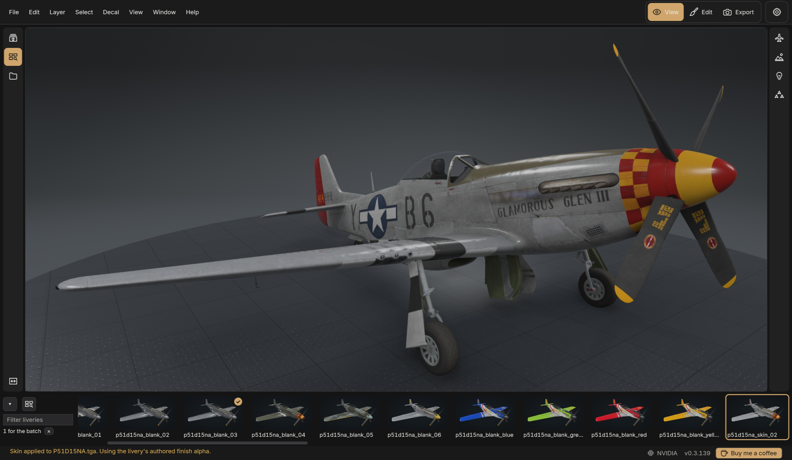
PRISM has three workspaces, one for each job: View to look at a livery and set up the scene, Edit to paint it and place decals, and Export to frame the picture and save it. The View · Edit · Export switch at the right of the menu bar chooses between them, and Ctrl+1, Ctrl+2 and Ctrl+3 do the same from the keyboard. The camera stays where it is when you switch, so the vehicle you framed in View is the one you paint and export. Edit and Export need a vehicle, so they wait until you load one.
What stays the same in every workspace:
- Menu bar (top): File, Edit, Layer, Select, Decal, View, Window and Help, with each command's key beside it (see below). In Edit it also names what you are editing, "Project · name" or "Livery file · name". At its right end sit the workspace switch and Settings, the gear.
- 3D view (centre): the vehicle, live, as it will export. Until you choose one, it shows a grid of vehicles from every collection, drawn afresh each time PRISM starts. The view bar in its corner holds Fit and the Lens, and the view cube sits beside it.
- Status bar (bottom): what PRISM is doing, the graphics card PRISM draws on (NVIDIA, AMD or Intel; hover it for the card, its memory and the card the last Blender render used), and the version. Every message appears there, in yellow, and pulses for two seconds when it changes. Click the message for the last thirty, each with its time. After an export, Open folder beside the message shows the saved file in File Explorer. In Edit, the status bar also shows the open sheet's zoom and size at its left, and the chosen tool's keys at its right, such as "[ / ] size · Alt picks a colour · Shift + click draws a line".
What each workspace shows around the 3D view:
| Left | Right | |
|---|---|---|
| View | Library, Liveries and Projects icons, and the livery filmstrip along the bottom | The Vehicle, Scene, Lighting and Group icons |
| Edit | The Painter's tool rail, with the two colour swatches at its foot, and the flat sheet | The Colour panel, and below it a dock with Layers and Decals as tabs (see The Painter) |
| Export | Liveries and Projects icons, and the filmstrip | The Frame and Overlays icons, and Export… for the Outputs window (see Exporting) |
In Edit, a row above the views holds the sheets of the livery as tabs and, at its right, Paint in 3D, Light from camera, the Light menu, the 2D · Split · 3D layouts and Detach views, which moves the sheet and the 3D view into a window of their own (for a second monitor or a pen display; Window → Detach views again brings them back). Under that row, the options bar holds the chosen tool's settings. Window → Colour, Layers and Decals show or fold the panels on the right.
The menus
Every command has a name in a menu, whichever workspace you are in:
- File: New project…, Open project…, Open recent, Projects page; Save, Save as…, Save version… and Versions…; Import skin…, Restore original livery and Skin options… (Live DDS, Surface finish and Inspect skin…); Export skin…, Export to game, Layered PSD… and Export pictures…, which opens the Outputs window; References…; Exit.
- Edit: Undo, Redo and Cancel operation; Copy, Paste and Clear; Fill selection, Stroke path, Transform, Flip horizontal, Flip vertical and Remove marking; Preferences…, which opens Settings.
- Layer, Select and Decal: the Painter's layer, selection and decal commands (see The Painter and Decals).
- View: Fit, 100% and Rotate sheet; Sheet only, Sheet and 3D and 3D only; Paint in 3D, Light from camera, UV overlay, Show finish and Hide livery; Lens….
- Window: the three workspaces, the panels of the workspace on screen, Detach views in Edit, and Focus mode.
- Help: User guide, Keyboard shortcuts, Check setup…, Check for updates, Report a problem… and About PRISM, which shows the version.
A command that cannot run now is greyed, and pointing at it says why: the Painter's commands, for example, work only in Edit. The keys shown beside the commands work without opening the menu.
The icon docks
In View and Export, a strip of icons runs down each side of the 3D view. Point at an icon and its panel opens over the edge of the view, so the vehicle does not move; it closes again once the pointer leaves that side's icons and the panel. Point at another icon on the same side to switch panels. Click the icon instead and the panel stays open beside the view, which moves aside to make room; click the same icon again to close it, or another icon on that side to keep that panel open instead. Clicking in the library's search box also keeps it open, so it stays while you type. Clicking the 3D view or pressing Esc closes a panel showing over the view; a drag on the view still turns the camera and leaves it open. One panel opens on each side at a time. Liveries shows or folds the filmstrip, and Projects opens the projects page. The Window menu lists the same panels.
Drag a panel's inner edge to make it wider or narrower. PRISM remembers which panels you kept open and how wide each one is. Export opens its panel beside the view, so it never covers the frame.
Tab hides everything but the vehicle, and Tab again brings it all back as it was; so do Focus, the icon at the foot of the left strip, and Window → Focus mode. Tab still moves between boxes while you are typing.
With no vehicle chosen, the library opens by itself.
The library
The logos at the top choose a collection: Great Battles aircraft, Tank Crew ground vehicles or Flying Circus aircraft. Each vehicle is shown by name with a side-view picture. Type in the search box to filter; the search also knows full names, such as Mustang or Thunderbolt.
Aircraft marked AI are not flyable in the game (for example the B-26). You can view, paint and render them like any other, but the game may not show custom skins on them.
Click a vehicle to load it. The library remembers your collection and reloads quickly; it checks the installation for changes in the background.
Moving around
| Orbit and tilt | Left-drag |
| Pan | Right-drag, middle-drag or Shift+drag |
| Zoom | Mouse wheel, towards the pointer |
| Fit the vehicle | Double-click, or Fit on the view bar |
| Turn the vehicle itself | Ctrl+left-drag (yaw and pitch) |
| Roll the vehicle | Ctrl+wheel, 5° a notch |
| Reset the view | Ctrl+R: the default three-quarter view, fitted |
Turning the vehicle with Ctrl turns it about its centre without moving the camera, and exports keep that pose. It is the way to show an aircraft banking into a turn or climbing away: pose the vehicle with Ctrl, then orbit the camera around it as usual. The lights stay where they are unless a light is set to Rotate with vehicle (see Lighting).
In View the mouse only moves the camera. In Edit, the Decals tool and painting in 3D make a left-drag move decals or paint instead, so hold Alt to orbit there; in Export the frame and overlays move by their handles, and a drag elsewhere orbits.
The view cube
In the corner of the 3D view, beside the view bar, a small cube turns with the camera, its faces named Front, Right, Rear, Left, Top and Bottom. Click a face, an edge or a corner to turn the view to it, with the vehicle level, then adjust it as you like: twenty-six views in all, from straight ahead to a quarter from above or below. Hover over a part to see its name. Drag the cube to orbit, as a drag on the view does. The cube shows in View, Edit and Export, never in your pictures.
The lens
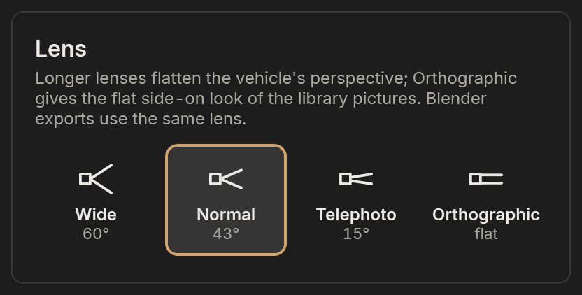
The Lens on the view bar (or View → Lens…) chooses the lens: Wide (60°), Normal (43°, the usual view), Telephoto (15°) or Orthographic, a flat side-on look like the library pictures. The camera stands back as the lens narrows, so the vehicle keeps its size. Blender renders use the same lens, and projects remember it.
Which lens to use:
| Wide | Dramatic close-ups, with the nose looming large; also shows more of a hangar or sky around the vehicle. |
| Normal | The everyday view, close to how the eye sees. |
| Telephoto | Flattens the perspective as a long lens does; flattering for side and three-quarter views, and the usual choice for presentation pictures. |
| Orthographic | No perspective at all, for side, top and front profiles that line up with plans and reference drawings. |
The shape of the picture, and the frame that shows it, are set in Export (see Exporting). To come back to a camera view later, save it in the Showcase window.
Settings
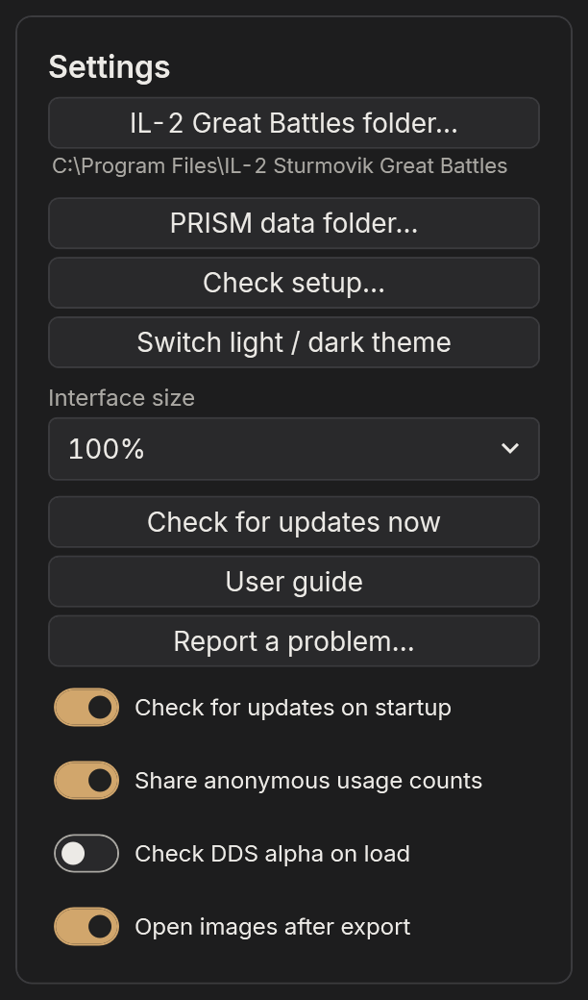
Settings, under the gear at the right end of the menu bar (or Edit → Preferences…), holds:
- IL-2 Great Battles folder…, when PRISM did not find the game by itself, or found another copy than the one you play (Export to game writes into it). The folder it uses shows underneath.
- PRISM data folder…: where PRISM keeps its settings, cache and artwork, the
Datafolder besidePRISM.exeunless you move it, for example off your system drive. PRISM moves it the next time it starts, then asks before removing the old copy. PRISM itself runs from any folder. - Check setup… (also in the Help menu) checks the game folder, PRISM's data folder and Blender, with a green or amber dot and a plain sentence for each, and a Fix… button for each problem (and for setting up Blender when none is found). Reset folders… there lets PRISM find the game folder again and reopens the open project as last saved; Copy summary copies the findings to paste where you ask for help.
- Switch light / dark theme (PRISM starts light the first time).
- Interface size: 100%, 110%, 120% or 130%, for the text, icons and controls in every window; the larger sizes suit big or high-resolution screens.
- Check for updates now, User guide, which opens this guide on PRISM's website, and Report a problem… (see Troubleshooting).
- Check for updates on startup and Share anonymous usage counts (see Troubleshooting).
- Check DDS alpha on load (see Liveries) and Open images after export, which opens each finished picture in your usual image viewer.
Liveries
PRISM lists every livery it can find for the loaded vehicle: the game's own packed skins, and loose skins in the game's skins folder. The livery filmstrip along the bottom of the window switches between them with a click, and the livery browser searches them all. The File menu has Import skin… and Restore original livery, and File → Skin options… opens a panel under the menu bar that gathers everything else to do with the livery: Browse liveries…, Import skin…, Inspect skin…, Restore original, Live DDS, Surface finish and the Advanced texture target.
The livery filmstrip
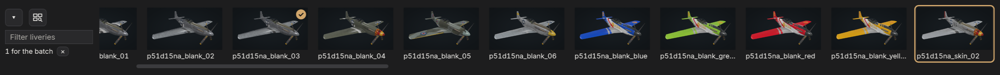
A card for each of the vehicle's liveries, in every workspace: Original finish first, then your favourites (starred), then the rest by name. A livery of two sheets is one card. The livery on the vehicle is outlined.
Your own projects for the vehicle come before the liveries, newest first, on a tinted panel headed Your projects, each card marked with the layers icon. A project keeps its layers and decals; a livery card is a flat file in the game. Click a project's card to open it in the workspace you are in: in View its painting shows on the vehicle, and its layers are there once you switch to Edit. The open project is outlined, and a project with no files in the game yet says Not exported. A livery that one of your projects exported names it on its card, such as from V5. In Edit, the menu bar names what you are painting: Project · name, or Livery file · name when no project is open.
- Click a livery's card to put that livery on; Ctrl+← and Ctrl+→ step to the previous or next card. In a text box those keys move the cursor instead.
- Right-click a card to make it a favourite, open its folder (loose skins only), Edit this livery (it opens Edit with that livery), or add it to a batch.
- Ctrl+click chooses several cards for a batch; the strip says how many, and × clears them. The Batch liveries window then opens with exactly those ticked (see Exporting).
- Filter liveries narrows the cards by name, and the grid button opens the livery browser.
The strip folds to a thin bar with the arrow at its left, and each workspace remembers its own choice: open in View and Export, folded in Edit at first, where the sheet and 3D view want the height. Click the bar to open it again; the Liveries icon at the left of the view and Window → Liveries fold and open it too. Pictures are drawn as the cards come into view and kept in the same cache as the browser's, so they appear quickly afterwards. With Live DDS on, a skin you save again redraws its card. A vehicle with no liveries beyond its own shows where loose skins for it go.
In Edit, the livery under the Painter never changes without asking. Choosing another card, Restore original, or Import skin… for the paint sheet asks first; with unsaved painting it offers Save and switch or Switch without saving. After the switch you stay in Edit on the new livery, and a saved project keeps your painting and decals: PRISM leaves the project and takes its decals off with it, so its file is untouched, the new livery shows as it is, and the next save asks for a name (see Projects and sessions). With no project open, decals stay on through a switch, so you can try them over other liveries. A card in the strip is a livery in the game, such as a project's export with its decals baked in. When one of your other projects exported that livery, choosing its card in Edit (or Edit this livery on its menu) first asks whether to Open project, where its layers are still editable, or Edit the file, where they are part of the picture. Any project can also be opened from the Projects page.
The livery browser
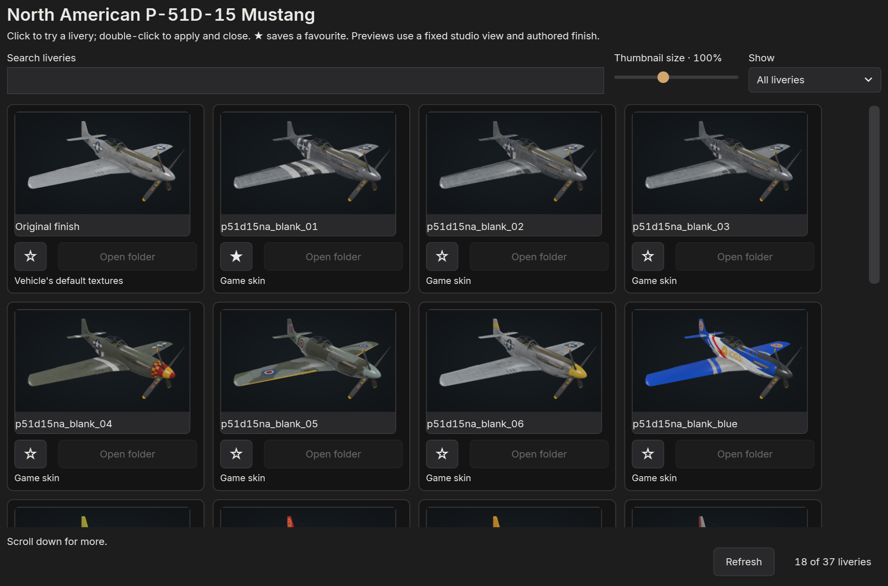
Choose Browse liveries… in Skin options, or the grid button on the filmstrip. The browser shows a larger picture of every livery for the vehicle on screen.
- Click a picture to try the livery while the browser stays open; double-click to apply it and close the browser.
- Type in Search liveries to filter by name, and use Show for All liveries, Favourites or Recently used. The star under a picture makes it a favourite, here and on the filmstrip.
- With All liveries, your projects for the vehicle come first under Your projects; click one to open it.
- Thumbnail size makes the pictures larger or smaller; the browser remembers its size and place on screen.
- Open folder opens the folder of a loose skin (packed game skins have none). Refresh looks for new skins and redraws pictures of DDS files that changed.
The pictures use a fixed camera, studio light and each livery's own finish, so liveries compare fairly. They are drawn on your PC the first time and kept in a cache, so the browser opens quickly afterwards.
Your own skins
Drop a DDS or PNG onto the window, or choose File → Import skin…, to apply it to the vehicle on screen. In Edit a dropped picture becomes a new paint layer instead (see The Painter). PRISM keeps the texture's full resolution. Restore original livery goes back to the vehicle's own textures. A .prism project dropped on the window opens.
A livery made of two sheets loads whole: a second sheet named X#1 beside the first sheet X, such as the C-47A's wings. Pick the first sheet and PRISM finds the second.
Advanced texture target chooses which of the vehicle's surfaces a custom texture replaces, for vehicles whose paint is spread over several materials. Most liveries never need it.
Live DDS
Live DDS (in Skin options) watches the loaded skin file while you work on it in Photoshop, GIMP, Affinity or another editor: save to the same file and PRISM refreshes within a second or so, keeping your camera, scene and lights. A typical loop:
- Import the DDS you are editing, and turn on Live DDS.
- Frame the part you are working on; Ctrl + drag poses the vehicle to show it.
- Edit and save in your image editor, and look at the result in PRISM. Export a Quick PNG whenever you want to share a progress picture.
PRISM never writes to the file it watches. While Live DDS is on, the surface finish is the livery's authored finish. Editable decals pause live updates, since they are baked onto the skin; the choice is remembered.
Surface finish
A Great Battles livery's finish (how shiny or matt each part is) comes from the texture's alpha channel. A skin saved without its alpha, or with it flattened, looks chalky white or wet and glossy all over. Skin options → Surface finish repairs or replaces it:
- Automatic repair restores missing alpha from the original aircraft.
- Livery's authored finish uses exactly what the file holds.
- Original vehicle finish borrows the stock livery's finish.
- Matte fabric / paint makes everything matt.
Choosing a finish loads the livery again, so while a project's painting is open the finish stays as it is and the status bar says why: changing it would close the project.
Save repaired DDS… writes the repair to a DDS, backing up any file it replaces; Save repaired PNG copy… saves a copy for use in PRISM without touching the source.
When Check DDS alpha on load is on (Settings), loading a loose skin with broken alpha offers Back up and repair, or Keep unchanged.
The skin inspector
Skin options → Inspect skin… opens the Skin inspection window: the flat texture beside the vehicle. Choose what the vehicle shows: Shaded, Colour · no lighting, Alpha / finish or Normal map · raw RGB. Click a panel on the vehicle to find it on the texture: a ring pulses at that spot, and the window gives its UV and pixel coordinates. Fit, 100%, − and + zoom the texture. It is the quickest way to find where a rivet line or a panel lies on the sheet before you paint it. The inspector never changes files or exports; close it to return to normal shading.
Scene
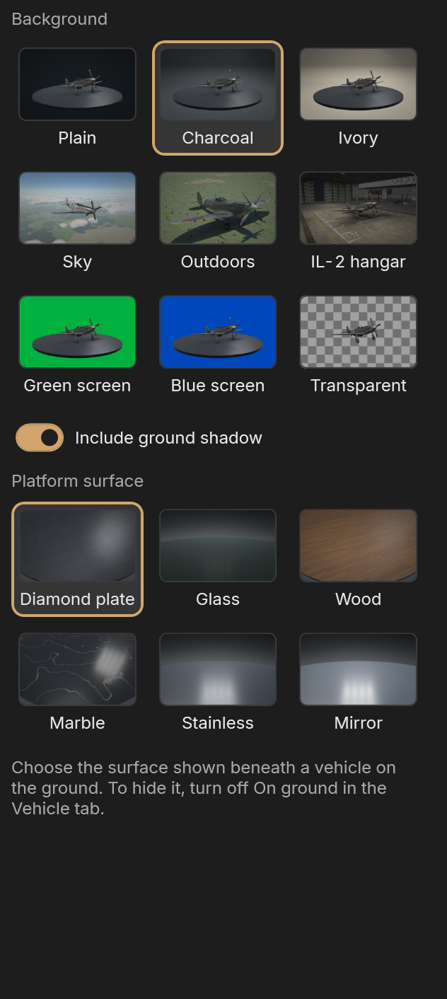
The Scene panel chooses where the vehicle stands and what surrounds it. In View, open it with its icon at the right of the view or from Window → Scene: point at the icon to look, click it to keep the panel open beside the view, and click it again to close it. Every choice shows as a picture tile; hover one for its name.
Backgrounds
- Charcoal and Ivory studios: seamless curved backdrops, darkening gently towards the corners. Charcoal suits bright and natural-metal liveries; Ivory suits dark and camouflaged ones. Include ground shadow, on at first, draws the vehicle's shadow on the floor; turn it off for a clean floor.
- Plain: a flat background colour.
- IL-2 hangar: the game's own hangar, with its lamps, read from your IL-2 Great Battles installation. The vehicle stands on the hangar floor, and the hangar's lighting replaces the studio lamps. Floor and wall brightness lightens or darkens the hangar alone, without changing the light on the vehicle.
- Sky: the vehicle in flight, lit by the sun and sky (see below).
- Outdoors: the vehicle standing outside on real ground, under a photographed sky (see below).
- Transparent: a real transparent background, shown on a checkerboard, for pictures you will place on a web page or in an image editor. Its own Include ground shadow, off at first, keeps the vehicle's shadow on an invisible floor.
- Green screen and Blue screen: flat key colours for compositing in video editors.
The platform
On the ground, the vehicle stands on a round platform sized to it, the same platform turntables use, with its shadow and reflection beneath. Platform surface chooses diamond plate, glass, wood, marble, stainless steel or mirror; choosing one puts the vehicle on the ground. Glass, stainless steel and mirror reflect the vehicle's underside, which suits silver and polished liveries.
The platform shows only on the ground, and not in the IL-2 hangar (which has its own floor), Outdoors, in the Sky or with a transparent background. On ground and Gear down, on the Vehicle panel, switch between standing and flying and extend the landing gear in flight too. Ground vehicles always stand on the ground, so for them On ground stays on and the Sky background is not offered.
Outdoors
With Outdoors, the vehicle stands on the ground in a real outdoor setting: PRISM builds the ground around it, about 150 m across, and a photographed sky lights it and fills the distance. Aircraft and ground vehicles alike always stand on the ground here, and the studio lights and lighting presets are paused.
- Environment: Grass airfield, Woodland edge, Winter, Dirt strip, Steppe, Snowy forest or PSP strip. Each sets the ground textures, what grows on them and the photographs.
- Lighting: each environment has three matching photographs, such as morning, midday and overcast. The photograph lights the vehicle with its real sun and sky, and the ground takes its colour from the photographed ground.
- Sun direction turns the photograph and its sun around the vehicle; Brightness makes it brighter or darker than PRISM's automatic match to daylight.
- Ground detail sets how densely grass, flowers and stones grow in Blender renders: Low renders quickest, High looks lushest.
- Photograph size: 4K, or 8K for sharper reflections and background (a separate, larger download).
The first time you choose an environment, PRISM asks before downloading its ground textures, plants and photographs from Poly Haven (tens of MB to a few hundred MB per environment, the size shown on the button). They are free to use under CC0 and kept in PRISM's own folder, shared between environments. An environment still to download has a download badge on its tile, and its Download button sits right under the environment tiles. If the download is cancelled or fails, nothing half-finished is kept.
The PSP strip stands the vehicle on a runway of pierced-steel planking (Marston mat), 140 ft wide, with grass either side and growing through the holes. PRISM draws the mat itself, so it needs no download of its own: the first time you choose it, PRISM makes it in a few seconds.
The viewport shows the textured ground, its shadows and the photograph behind. The grass, flowers and stones appear in Blender renders, where the ground fades into the photograph towards the horizon. Quick PNG gives the viewport's picture, and turntables turn the vehicle in place on the ground.
Sky
With Sky, the sun, sky and clouds light the vehicle together and the studio lights are paused. Choose the Sky source at the top: a simulated sky whose clouds you shape, or a photo sky, a photographed sky that lights the vehicle with its real sun and clouds.
Simulated sky
- Sky presets: Clear blue, Daylight (with scattered cloud), Sunrise, Sunset and Overcast. A preset is a starting point: it sets the sliders below, which take it from there.
- Sun elevation and Sun direction: a low sun gives warm light and long shadows; negative elevations put it below the horizon, for dusk. The scene stays fixed while you orbit the camera.
- Haze: more haze whitens the sky near the horizon and fades distant ground and cloud into it.
- Cloud type: Cumulus (scattered and puffy), Stratus (layered) or Cirrus (thin ice streaks), with coverage (zero for a clear sky), density (thin and translucent to dense with dark bases), layer thickness, layer height (negative puts the clouds below the vehicle, positive overhead, near zero flies through them), cloud size and clear space around vehicle, which pushes nearby clouds away while keeping the distant layer. New cloud arrangement reshuffles them.
- Ground detail: Countryside below vehicle adds farmland, woodland, rivers, villages and roads, with height above ground, landscape scale and Hills; Mountains raises real ranges with rock and snow on the horizon.
The viewport previews the same sky and cloud shapes that Blender renders with Cycles; thick or dense cloud layers take longer to render.
Photo skies
Photo skies are equirectangular HDRIs (.hdr or .exr) from your Photo skies folder and those shipped with PRISM. Sky brightness matches the photograph to daylight, darker for a gloomy overcast or brighter for a dull evening, and Sun direction turns the photograph and its sun around the vehicle.
Poly Haven… browses the free skies on polyhaven.com and downloads the size you choose into your Photo skies, checked. To add your own, Open Photo skies folder, copy the files in and press Refresh.
The viewport shows a preview of the photograph and lights the vehicle with the sun and skylight measured from it; Blender renders the full photograph. A photographed sky has no clouds below the vehicle, and its sun keeps the height it was photographed at.
Group pictures
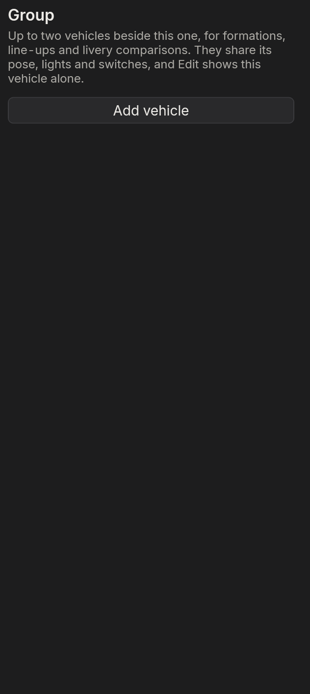
The Group icon at the right of the view in View (or Window → Group) opens the Group panel, which puts up to two more vehicles beside this one, for formations, line-ups and livery comparisons.
- Add vehicle adds a guest, of the same type to start with. Each guest's card has a Vehicle list, with a search box above it, drawn from the collection the library shows, and a Livery list in the filmstrip's order: Original finish, your favourites, then the rest. The × button removes the guest.
- Layout places the guests: Side by side, Echelon right, Echelon left or, with two guests, Vic. Spacing sets the gap between neighbours; until you move it, it follows the vehicles' sizes, and a double-click goes back to that.
- Each guest's Forward and Sideways move it up to 20 m from its place, Height up to 10 m up or down in flight, and Heading turns it all the way round, up to 180° either way. A double-click puts a slider back to 0.
- The guests share the vehicle's pose, gear, lights, propellers and other switches. Fit takes the whole group in, and the platform grows to hold it.
- Edit shows the vehicle alone for painting; the guests come back in View and Export.
- Projects and the session keep the group. A guest whose vehicle no longer loads is left out, and one whose livery is gone opens on Original finish, each with a notice.
Lighting
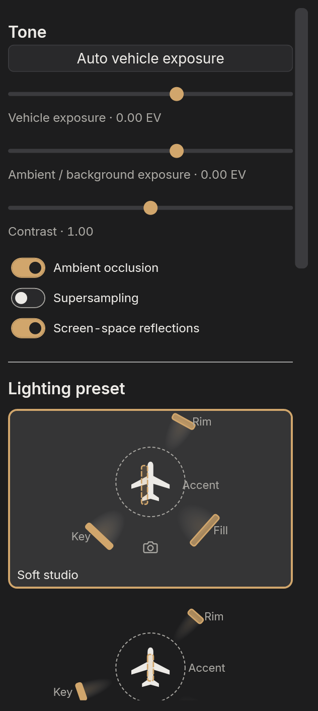
The Lighting panel sets the studio lights and the picture's tone. In View, open it with its icon at the right of the view or from Window → Lighting. With the Sky or Outdoors background the sun and sky light the vehicle instead, and in the IL-2 hangar its own lamps do; the studio lighting presets are unavailable there, and their tooltips say why.
Presets
Lighting preset sets up the four studio lights in one click, each shown as a small diagram of the lights around the vehicle seen from above:
| Soft studio | A broad key, gentle fill and soft rim; a balanced starting point for painted vehicles. |
| Shape & detail | A side key and restrained fill bring out panel contours and surface detail. |
| Polished metal | Large softboxes lay broad reflections across bare aluminium, with a rear highlight. |
| Rim highlights | A stronger rear rim outlines wings and canopy against darker backgrounds. |
| Dramatic | A focused side key, little fill and a controlled rim, for deep shadows. |
| Sunshine | Only the sun, with a soft sky fill lifting the shadows; set the sun's direction, elevation and temperature (its colour: about 5,600 K is midday, lower is the warm light of sunrise and sunset). |
The lights stay where they are while you orbit the camera, so a view from behind can be lit from the wrong side. Reapply to current view puts the preset's lights back where they belong for the angle you are looking from.
On the ground, Light rotation turns all four lights around the vehicle together, and Light intensity brightens or dims them together, keeping their balance. Daylight mixes ambient daylight with the studio lights; the IL-2 hangar is an enclosed room, so it has none.
Individual lights
Open Adjust individual lights to fine-tune the four lights: Key shapes the vehicle, Fill softens its shadows, Rim outlines it and Accent adds highlights. For each:
- Light enabled switches it off and on.
- Softbox (a broad, soft light) or Spotlight (a focused beam with harder shadows).
- Brightness, and the softbox size (larger panels give broader highlights and softer shadow edges) or the spotlight's beam width.
- Rotate with vehicle: off, the light stays put in the studio; on, it follows the vehicle's pose when you turn it with Ctrl, keeping a banking aircraft lit the same way.
- Advanced aiming moves the beam's target across or along the vehicle.
Tone
- Vehicle exposure brightens or darkens the vehicle only.
- Ambient / background exposure brightens or darkens the studio, floor, hangar and other surroundings.
- Contrast sets the spread between dark and light.
Click a slider before using the mouse wheel on it, so scrolling the panel never changes a value by accident. The wheel and arrow keys move exposure by 0.05 EV and contrast by 0.01.
Auto vehicle exposure measures the vehicle alone and sets vehicle exposure and contrast for a consistent look: its midtones at about 45% grey, whatever the vehicle or light. Highlights are kept below white, measured by each pixel's brightest colour, so saturated paint doesn't clip; the smallest reflections, such as a glint on glass or bare metal, may clip rather than darken the whole vehicle. When the vehicle's tones are bunched, it adds contrast (up to 1.30) so its shape reads. Use it again after changing the camera, the livery or the lighting.
Effects
- Ambient occlusion darkens creases, wheel wells, running gear and the floor beneath the vehicle, where nearby surfaces block the light, as a Cycles render does.
- Screen-space reflections let polished metal and gloss paint reflect the vehicle's own parts and the floor where they are in view.
- Supersampling draws the viewport at twice its width and height and averages it down, smoothing stepped edges and shimmering patterns such as the wooden deck's planks, at about four times the work.
Quick PNG and viewport turntables use ambient occlusion and reflections as the viewport shows them, and are always supersampled. Blender computes all three itself.
Lighting recipes
- A natural-metal aircraft: Polished metal on the Charcoal studio with the Mirror or Stainless platform, then Auto vehicle exposure.
- Camouflage and panel detail: Shape & detail on Ivory, with ambient occlusion on.
- A poster shot: Dramatic or Rim highlights on Charcoal, a Telephoto lens and a low camera.
- Out in the sun: Sunshine with a low elevation and a warm temperature for late-afternoon light, or the Sky background for clouds around the vehicle.
The Vehicle tab
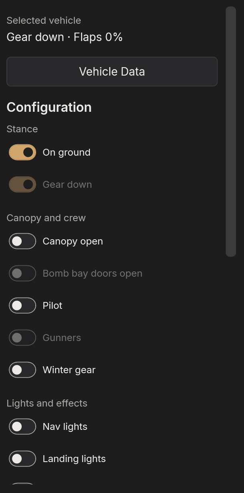
The Vehicle panel sets up the loaded aircraft or tank. In View, open it with its icon at the right of the view or from Window → Vehicle: point at the icon to look, click it to keep the panel open beside the view, and click it again to close it. Options the vehicle does not have are hidden or greyed out; hover a greyed-out one to see why. All of these are remembered, saved in projects, and used by every export.
The top of the panel sums up the vehicle's state (gear, flaps), and Vehicle Data opens the game's description, history and diagrams for the vehicle, where the game provides them. Below it, Configuration holds the switches, the loadout and the modifications, and Animation the flaps, slats, speed brakes and propellers.
Stance
- On ground stands the vehicle on the platform or flies it, and Gear down extends the landing gear in flight too. Fixed-gear aircraft always keep theirs, and ground vehicles always stand on the ground.
Canopy and crew
- Canopy open opens the pilot's and gunners' canopies; Bomb bay doors open on the bombers that have them; Open crew hatches on tanks, and Side doors open on the CG-4A glider.
- Pilot and Gunners show the game's seated crew in their own seats and turrets.
- Winter gear dresses them in winter flying kit instead of summer, where the game ships both.
Loadout and flaps
- Loadout: the game's own weapon and fuel-tank configurations, as the game lists them, from Clean aircraft on. On the He 111, a loadout with external racks hides the internal bomb bay doors; choose Clean aircraft or an internal-bay loadout to open them.
- Modifications: the game's own variants that change the outside, such as an armoured windscreen or another gun sight. A modification on its own is a switch; alternatives share a list that starts at Standard. A loadout that needs a modification switches it on, and a modification the chosen loadout cannot carry returns it to Clean aircraft, with a notice.
- Flaps: from retracted to fully extended, for aircraft with animated flaps, with the gear up or down.
- Slats and Speed brakes: from retracted to fully extended or open, shown only for aircraft that have them, such as the Bf 109s' leading-edge slats and the Ju 88's dive brakes.
Lights and effects
- Nav lights and Landing lights, where the model has them. Retractable landing lamps, as on the P-47s, swing out when the landing lights are on and stow when they are off.
- Spinning props spins the propellers. Speed is the propeller shaft's speed in RPM (zero pauses them) and Shutter is the camera's shutter: a slow shutter such as 1/60 s gives long blurred blade trails, as in a photograph, and a fast one freezes the blades.
- Muzzle flashes poses the fixed guns firing, as a camera catches a burst: about half the guns mid-flash, and a tracer line ahead of every gun in its nation's colour (red for American and Soviet aircraft, yellow-orange for German and Italian, red-orange for British and French). Gun smoke picks how the smoke at the muzzles is drawn: Volume is sunlit smoke with depth, which looks right from every side but takes longer in Blender; Puffs are flat soft puffs turned to the camera, quicker to render.
- Exhaust flames, on piston aircraft with exhaust flames: while the propellers spin, each exhaust stub flames at its moment in the engine's firing order, timed from the propeller speed, with its own Flame strength. Most come from the game's own flames, and PRISM adds its own for many aircraft the game gives none. The shutter decides what a picture catches: at a fast shutter a few stubs mid-flame, at a slower one more of them glowing. Turntable videos follow the engine frame by frame.
- On jets the same switch is Exhaust glow: a warm glow inside the jet pipe, with its own Glow strength.
Every effect reaches Quick PNG, turntables and Blender renders as the viewport shows it.
Action shots
For an aircraft in action: choose the Sky background, turn off On ground, turn on Spinning props with a slow shutter, add Muzzle flashes, then pose the aircraft with Ctrl + drag and Ctrl + wheel so it banks into the turn. To fly others beside it, add guests from the Group panel (see Scene).
Decals and watermarks
Decals sit on the vehicle, painted onto its skin: squadron markings, numbers, names and nose art. They are placed in Edit, with the Painter. Watermarks sit on the picture: your signature, the vehicle's name, a logo. They are set in Export, in the Overlays panel.
Decals
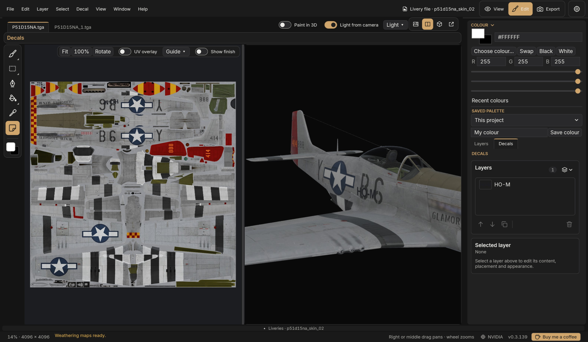
Adding a decal
In Edit, choose the Decals tool on the Painter's tool rail (or press D). Hover it for its flyout, which holds the tiles that add a decal. The same commands are at the top of the Decal menu: Add image…, Add text…, Artwork library…, Set library…, Import set… and Markings….
- Image: a PNG, JPEG, BMP or TIFF file of your own. Transparent PNGs work best.
- Text: opens a text editor. Type the text, then choose fonts, sizes, bold, italic, underline and colours letter by letter if you like; Word wrap breaks long text into lines of the width you set.
- Artwork: an image from PRISM's artwork library.
- Sets: a saved set of decals from PRISM's decal library (
Resources\Decals), placed together as you saved them. - Import: a
.decalsset file someone shared with you. - Markings: national insignia of the period, drawn by PRISM to their official proportions in the colours IL-2 itself uses: US stars and star and bars (1919 to the 1950s), RAF roundels A to C.1 and fin flashes, Luftwaffe Balkenkreuze and outline crosses, Soviet red stars, and Romania's Michael's cross and roundel. Your aircraft's nation is listed first. Pick a marking and one of its standard sizes (for example a 36 in C.1 for a fighter's fuselage), then click the vehicle: it is placed at its real size. A fin flash linked to the opposite side is mirrored, so red still leads.
Then click the vehicle where the decal should go. It lands on the painted surface under the pointer, flat against it and sized to suit. To reach the underside, orbit with Alt + drag first.
Choosing the Decals tool opens the Decals page of the dock on the right (beside Layers), where the decals are listed; Window → Decals opens it too. While the list is empty it offers Add a decal…, which opens the Decals tool's flyout. The Decal menu works only in Edit, and is greyed elsewhere.
Moving and shaping
With the Decals tool chosen, the 3D view works on decals; a painting tool such as the Brush lets go of the selected decal (a selection tool keeps it, for cutting), and selecting a decal takes up the tool again:
| Select | Click a decal on the vehicle, or its layer in the list |
| Move | Drag its centre |
| Resize | Drag its corner handle |
| Rotate | Drag its round handle |
| Snap to other decals | Hold Ctrl while placing or moving |
| Orbit | Alt + left-drag |
| Pan and zoom | Right-drag, middle-drag or Shift + drag; the wheel |
For exact values, open Placement on the Decals page: width and height (with Keep aspect ratio), in metres unless you type a unit: 36in, 36", 3ft, 3', 91cm, 914mm, 0.914m or 3'6" all work, and the boxes then show sizes in the unit you typed until you type another; rotation in degrees (Reset rotation sets it to 0); Move to another surface for a decal that belongs on another part of the vehicle; and Lock placement, which stops the decal moving by accident.
On the surface chooses how the decal sits on the vehicle, with Wrap, Flat and Around, also in the Decal menu. Wrap, where new decals start, lays it over the skin like a sticker: across panel joins such as the fuselage and the wing-root fairing, over gaps of up to about 2 cm to a neighbouring panel such as an aileron, and round curves, with width and height measured along the surface, so a 36 in roundel is 36 in across the skin. Where a livery is painted on two texture sheets, as on the C-47A and the Handley Page O/400, a decal carries on across the joint between them, Flat as well as Wrap, and stays one decal that you move, hide and delete as a whole; a note under the layer's name says when it carries on onto the other sheet. It does not carry onto detail the other sheet paints in many places at once, such as the C-47A's window recesses, and it still stops at the edge of a sheet a skin cannot change, such as a propeller or a wheel. It also stops where the skin turns more than a right angle away (it never creeps round to the other side of a fin or a wing edge), and where the surface creases. Flat projects the decal straight on, as decals were placed before Wrap; it can be cut short where the surface turns away. Decals in projects and decal sets saved before Wrap stay Flat until you switch them.
Around lays the decal all the way round the part you clicked, both sides and underneath, for a band of artwork round a fuselage, nacelle, spinner or drop tank: a checkerboard, a Greek key, a chain of stars. Height is the band's width along the vehicle and Width the width of one repeat. Repeats says how many times the artwork goes round: Auto, the default, fits whole repeats at the artwork's width, so the pattern meets itself with no join to see; type a number from 1 to 99 to fix it, or 1 to stretch one picture once round, when its two ends meet opposite the spot you clicked. Each slice of the band keeps its repeats, so where the nose tapers they narrow with it. Around reaches only the part you clicked: a store joined to it outside the band is left alone, but a wing root or fillet joined inside the band is painted too, so place a band clear of the wing roots. Rotation and linking are greyed and the round rotate handle goes, as the decal already covers both sides; unlink a linked decal before choosing Around. Where the part is open round the band, such as an intake lip or a cockpit opening, the decal ends at its edges and says so; where the part carries on onto another texture sheet, it covers this sheet only.
A warning under the layer's name means a decal reaches too far round a curve, such as the top of a fuselage: make it smaller, or place it again from a view that faces that surface.
Layers
Each decal is a layer, listed on the dock's Decals page. Decals always sit above the paint layers. The list shows them top first; Hidden and Locked mark the ones you have hidden or locked. Below the list: Move up, Move down, Duplicate and Delete, which are also in the Decal menu. The Painter's own Undo and Redo (Ctrl+Z, Ctrl+Y, also in the Edit menu) take back paint and decal edits alike, in the order you made them. Delete removes the selected decal, and Esc cancels a decal waiting to be placed. With nothing waiting, Esc or a click beside the decal lets go of it, and its yellow frame goes.
Select several layers with Ctrl + click or Shift + click to move, resize or rotate them as a group, keeping their layout.
Under Selected layer: its Name, Replace image (or Edit text for text), which keeps the placement and size, Link opposite side, Link mirrored and Unlink.
Markings on both sides
Most markings appear on both sides of a vehicle. Place the decal once, then Link opposite side (on the Decals page or in the Decal menu): PRISM puts a matching decal at the mirrored spot, reading the right way round, not flipped. For a marking that leads the same way on both sides, such as a flag whose canton faces the nose, use Link mirrored instead: the opposite decal is a mirror image, and whichever edge of the decal you placed faces the nose, that edge faces the nose on the other side too. Edits to either side change both; Unlink to edit them separately (a mirrored pair goes back to plain artwork). Where both sides share one area of the skin, they cannot carry different markings.
Appearance and wear
Under Appearance:
- Visible and Opacity.
- Blend: Normal (the decal's own colour), Multiply (darkens; white disappears, good for dirt and shading), Screen (lightens; black disappears), Soft Light (blends in subtly), Overlay (adds contrast) or Colour (the decal's colour with the skin's light and shade).
- Decal finish: Skin keeps the finish beneath, Painted is matt paint, Glossy a shiny lacquer, Metallic a metal (only on surfaces with a metal shader; elsewhere it is greyed).
- Colour: paints the whole picture in one colour, keeping its shape and soft edges, so one white stripe or circle serves every colour. Type a hex colour or click the swatch beside it, which also offers the Painter's saved palette and recent colours. A picture of several colours becomes one. Text decals have their own text colour instead.
- Outline: an outline round the decal, in a colour and thickness of your choice, as on many national markings.
Under Surface effects, folded at first:
- Weathering: Faded, Scuffed or Chipped paint, with an Amount, so the skin shows through.
- Gaussian blur softens the whole decal, for a sprayed edge.
None of these change the decal's image; change them back at any time.
Cutting a decal
To trim a decal, such as an oblique fin stripe whose ends should run level, make a selection with any Painter selection tool (Rectangle, Ellipse, Polygon, Panel, Magic wand, Band or Demarcation line), on the flat sheet or on the vehicle with Paint in 3D, and select the decal: first with the Decals tool, as a selection tool keeps it, or after, by clicking it with the Decals tool. Then press Ctrl + X to cut away the part inside the selection, or Ctrl + Shift + X to keep only that part; both work with the Decals tool and the selection tools. The same commands are in the Decal menu (Cut selection out, Keep selection only and Restore uncut) and under Cut with the selection in Appearance (Cut selection, Keep selection and Restore uncut).
The cut belongs to the decal: it moves, resizes and turns with it, and stays when you replace the image. Cuts add up, each is one step of Undo, and Restore uncut brings the whole decal back. A linked pair shares its cut, mirrored on the other side. On an Around decal a cut applies to every repeat. A decal that carries across two sheets is cut on both. Projects and decal sets keep the cut.
Saving decals
- File → Save (Ctrl+S) keeps every decal editable in the project (see Projects and sessions).
- File → Export skin… bakes the decals and paint into the skin and saves it as a DDS for the game; a livery of several sheets asks for a folder and saves each sheet. Existing files are backed up. File → Export to game writes it straight into the game's Skins folder, and Skin to game in Export's Outputs saves exactly the same files as Export skin.
- The menu button beside the decal list's title holds Save set…, which saves the selected decals, or all of them, as a set you can place on other liveries or share, and Update source, which writes the decals back into the loose DDS skin you loaded.
Quick PNG and Blender exports show decals as the viewport does, and Batch liveries can apply them to every livery it renders.
Watermarks
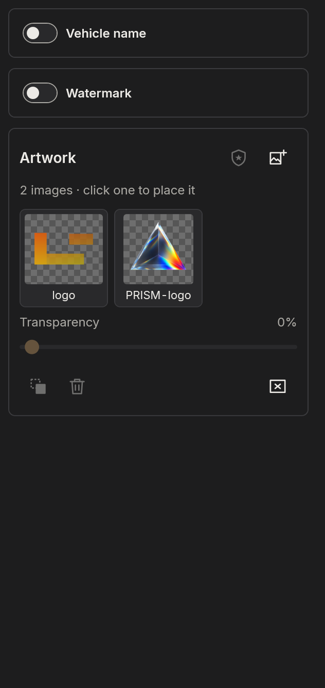
In Export, the Overlays panel, opened by its icon at the side of the view (or Window → Overlays), adds overlays that sit on the picture, not on the vehicle. They are drawn and moved only in Export, and appear in every export inside the frame, without their editing handles.
- Vehicle name: the vehicle's official name, or your own text (remembered for each vehicle; the button beside the text brings the official name back), with a font, transparency, an emboss for raised lettering, and an optional dark background.
- Watermark: your name, group or copyright notice, with the same font, transparency, emboss and dark background settings. Edit custom text sets fonts, styles and colours letter by letter. Drag its right or bottom edge to reflow the text, or its corner to resize it.
- Artwork: logos and images. Add images copies PNG, JPEG, BMP or TIFF files into PRISM's art library; Add badge places the vehicle's official badge from your installed game. Click artwork to place it, then set its Transparency, bring it To front, Remove it, or Clear placed art (the files stay in the library).
Drag an overlay to move it, and its corner to resize it; the Position grid snaps the vehicle name or watermark to a corner, an edge or the centre of the picture.
Painter
The Painter is the Edit workspace: choose Edit in the workspace switch at the right of the menu bar, or press Ctrl+2, to paint the loaded livery. Opening it is not an edit, so PRISM asks about saving only once something has changed. The flat texture sheet sits beside the live 3D vehicle, which follows every stroke. Painting never changes the original skin: your paint lives in layers above it, as in an image editor. PRISM remembers your tool, your colours and the settings on the options bar from one visit to the next.
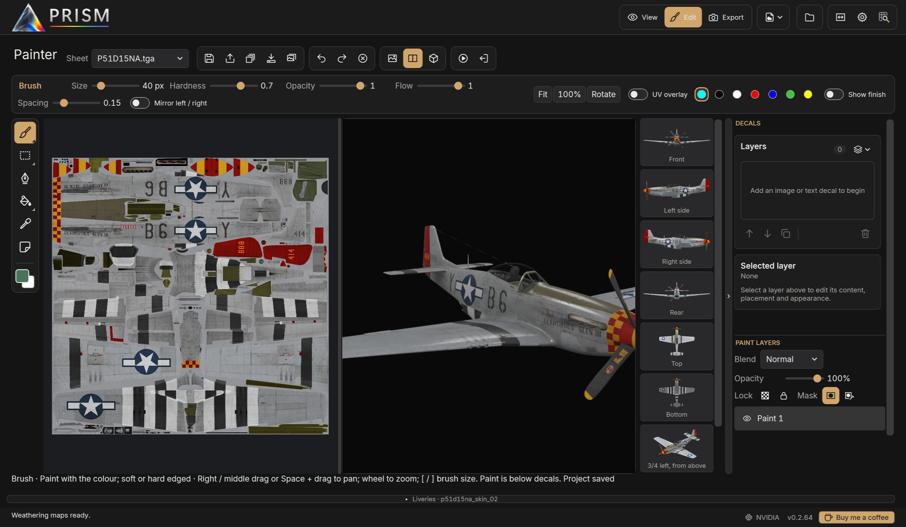
The Edit workspace
Edit is laid out like Photoshop or Affinity:
- The menu bar names every command. In Edit it also shows what you are working on: Project · name once the work is saved as a project, or Livery file · name while you paint a livery file that is not part of one. The Layer, Select and Decal menus, and the Painter's commands in Edit, work only in Edit; outside it they are greyed.
- The document row across the top holds the vehicle's texture sheets as tabs (most aircraft have one; some have two or more). At its right, always in the same place whatever the tool, are Paint in 3D, Light from camera, the Light menu, the 2D, Split and 3D layouts and Detach views.
- The options bar under it shows the chosen tool's name and its settings.
- The tool rail runs down the left, with the foreground and background colour swatches at its foot.
- On the right, the Colour panel sits above the dock, whose tabs are Layers and Decals. A click on the Colour panel's title folds it to that one row and opens it again; it never takes more than two fifths of the height, so the layers keep the larger share. Window → Colour, Layers and Decals show or fold them too.
- The status bar shows the open sheet's zoom and size at its left, and at its right the keys the chosen tool answers to, such as [ / ] size · Alt picks a colour · Shift + click draws a line. The Painter's messages appear in the status bar like any other.
Detach views (also Window → Detach views) moves the sheet and the 3D view into a window of their own, so they can go on one monitor and the tools on another, such as a pen display. Keys pressed in that window work as in the main one. To bring the views back, click Detach views again, Attach views where they were, or close their window. The window shows only while Edit is open, and PRISM remembers whether the views were detached and where their window was.
The sheet
2D, Split and 3D show the sheet alone, the sheet and the 3D view side by side, or the 3D view alone; drag the divider between them to share the space (a double-click puts it back in the middle). Click a sheet's tab to paint on it. Fit, 100% and Rotate, on the sheet's own bar over its top right corner, move around it; View → Fit, 100% and Rotate sheet do the same.
The sheet fits its pane when Edit opens. Fit keeps it fitted as the pane changes size, until you zoom, pan, rotate or choose 100%; your manual view then stays in place.
| Zoom | Mouse wheel, towards the pointer |
| Pan | Right-drag, middle-drag, or hold Space and drag |
| Fit the sheet | Fit |
The UV overlay, on the sheet's bar, draws the outlines of the sheet's islands, in a colour you choose from the Guide menu beside it, so you can see how the sheet wraps the vehicle; V turns it on and off while you work. It is only a guide and never enters your paint.
The Guide menu lays a guide over the paint, on the flat sheet and on the 3D model: Colour grid labels the sheet in cells (A1, B1 and on), so a spot on the vehicle names the cell to find on the sheet, and the list beside it sets how many cells run along each side, from 8 × 8 to 64 × 64 (32 × 32 to begin with); Sides colours what each part of the sheet covers, left blue, right red, and purple where both sides share it, so a marking painted there appears mirrored on the other side too. Strength sets how strongly the guide, and the UV overlay on the model, lie over the paint. Guides show in Edit only and never reach your paint, a project or an exported skin. Layered PSD carries them as hidden layers in a UV guides group, and the UV template tile in the Outputs window saves them as PNGs for any paint program.
The 3D view
Paint in 3D, in the document row, starts off each time PRISM starts and keeps your choice until you close it; the 3 key turns it on and off. With it on, Brush and Eraser work directly on the vehicle: left-drag to paint or erase on the selected layer, and Alt + left-drag to orbit. Right or middle drag pans, and the wheel zooms. Size is the brush diameter in screen pixels in 3D; on the flat sheet it remains texture pixels. Zooming in then makes the brush cover less of the vehicle, and its soft edge with it. With Paint in 3D on, the brush's options also offer Size on vehicle: tick it to set the 3D brush in centimetres instead, in a second Size beside it. It keeps its size on the skin as you zoom, and its circle grows and shrinks with the view. [ and ] change that size while it is on. The brush circle shows its footprint from your viewpoint.
With Paint in 3D on, Rectangle, Ellipse and Polygon select on the vehicle too: drag a rectangle or ellipse, or click a polygon's corners and close it on the first corner, with a double-click or with Enter. The surface you can see inside the shape becomes the selection on its sheet, wherever that surface lies on the sheet, so a stripe or lightning bolt along a fuselage is drawn once on the model instead of pieced together on the flat sheet. Its edges are smoothed, blending over about one texel, so a fill has no stepped outline to clean up. The shape's corners stay on the vehicle as small squares: drag one to adjust the shape, and the selection follows when you let go, each adjustment its own undo step. A rectangle or ellipse is adjusted by the corners of its box. Enter or Esc, a click away from the corners, another tool or turning the view lets the corners go and keeps the selection, which the 3D view then shows as a thin black and white dashed outline on the vehicle, one screen pixel wide however close you zoom, whatever tool you choose, until the selection is cleared. Then choose Fill selection, or paint inside it with the brush in either view. The shape covers only what is visible from your viewpoint: draw the other side again from there. A selection keeps to one sheet, so on a vehicle with several sheets a shape crossing onto another selects the sheet holding most of it, and the status bar says so. Remove marking still takes the shape's part on the other sheet, so a marking across a joint, such as a letter over a C-47's cowling and nacelle, goes in one step. Esc drops a shape while it is drawn, and turning or zooming the view drops it too.
Demarcation line (K, in the selection tools) selects the underside of a classic camouflage scheme in one go. Click points along the vehicle's side in the 3D view, from nose to tail; PRISM joins them with a smooth line, and from the second point everything below it is selected, on both sides of the vehicle and on surfaces you cannot see. The fuselage sides and the fin split at the line; wings, tailplanes and their leading edges split by which way they face, so their tops stay out and their undersides are selected. Backspace removes the last point, Enter or a double-click finishes, and Esc while drawing drops the line and puts the selection back as it was. The points stay on the vehicle as small squares, even when you turn the view: drag one to adjust the line. On the options bar, Below or Above picks the part selected, Softness eases the edge (0 cm for a masked edge, a few cm for a sprayed one), Wave lets the line meander like a freehand spray gun, with New variation for another meander, Between the points (on to begin with) keeps the selection between your first and last points along the vehicle, cut straight across there, where off the line runs on level to the nose and tail, and This side only keeps the line to the side you drew it on, for asymmetric schemes. Each change is its own undo step. The line works in the 3D view only, with Paint in 3D on or off; choosing the tool again brings back the last line's points, and on another sheet the same line makes its selection there.
Band (U, in the selection tools) selects a band of real width all the way round a part, the hidden side and the underside included: invasion stripes, theatre bands, wingtip bands and spinner rings. Click the vehicle in the 3D view and the band is centred there. On the options bar, Around makes a ring square to the vehicle's length, round the fuselage, the spinner or a nacelle, and Spanwise makes a band across a wing or tailplane at the clicked distance from the centre, on both sides at once, or round a fin at the clicked height. Width and Gap take sizes as the decal boxes do (18in, 46cm, 1'6"); Count makes several stripes of that width, the gap apart and centred on the click; Softness eases the edge, 0 cm for a masked one; Angle leans the stripes, Around bringing the top towards the nose (positive) or the tail, Spanwise turning the stripe's front end outward or in. The band takes only the part you clicked: stripes across the wings leave the tailplane alone, though something touching the part inside the band, such as a wing-root fillet, comes along, to trim with Subtract. For bands of two colours, such as D-Day stripes or black and white identification bands, tick Two colours: the band selects the whole block, gaps included, and Fill selection paints the stripes in the foreground colour and the gaps between them in the background colour. Swap (or X) changes which colour is outside. D-Day stripes are Width 18in, Count 3, Gap 18in with white in front and black behind; click the rear fuselage, fill, and do the same with Spanwise on a wing. Away from the Band tool, Fill selection fills the block in one colour, as any selection. A small square stays at the band's centre on the vehicle, even when you turn the view: drag it to move the band. Each change is its own undo step. Esc straight after a click puts the selection back as it was; Enter keeps the band and lets the square go. A click on a part on another sheet makes the band on that sheet. Before you click, the band a click would make is tinted red on the vehicle under the pointer, so you can aim it (with Two colours, in its two colours); once placed, the band's selection stays tinted while its square shows and the pointer is off the vehicle, following each change on the options bar. The tint is only a guide in the 3D view: it is not painted and never reaches an export.
Strokes follow visible surfaces across texture seams and between sheets, with one undo step for the whole stroke. Hidden surfaces are protected. Esc cancels the current stroke, including any paint already previewed. Large brushes over a zoomed-out, high-resolution skin can take longer to finish; the status bar shows when a stroke is still being applied. Zoom closer for detailed work.
Both views edit the same layers, including finish layers and masks, and the result is saved and exported by the usual commands. Airbrush and the other painting tools continue to work on the flat sheet. Mirror left / right works in both: with Paint in 3D, a Brush or Eraser stroke on one side of the vehicle also lands at the same place on the other side, the same size and softness, in one undo step; where the other side has no matching surface, only your side is painted and the status bar says so. If the game uses one texture region on several parts, painting that region changes all of them, even without mirroring. Paint stays below decals.
With Paint in 3D off, left-drag orbits and a click on the vehicle finds that spot on the sheet: a ring pulses there, and PRISM switches to the right sheet. The sheet moves only when the spot is out of view. With Panel, Bucket, Replace colour or the Eyedropper, a click on the vehicle also acts on that spot as a click on the sheet would. Propeller motion pauses in the Painter so the blades can be painted; the scene's motion setting is kept for View and exports.
Edit has its own even light, three broad softboxes and no sun, so paint shows its colour whatever your scene's lights; View and Export keep your scene's lights and exposure. Light from camera, in the document row, turns this light with the view, so whichever side you turn to the camera is lit, the underside too. The Light menu beside it chooses Softboxes or Dome. A glossy finish still reflects a softbox: in the menu's diagram, with the view in the middle and side-on at the rim, drag a softbox to move its reflection off the paint you are judging, or click it to switch it off; Reset lights puts them back. Dome lights the vehicle with an even grey sky all round it, brighter overhead, and no lamp at all, so glossy paint shows no bright spot wherever you turn it. Brightness, at the foot of the menu, lifts or dims this view alone (double-click its slider to reset). PRISM remembers all of these.
The view cube in its corner turns the 3D view to a face, an edge or a corner of the vehicle with one click, then you adjust it as you like, Ctrl + drag and Ctrl + wheel included (see The PRISM window). The Painter starts with the vehicle turned, pitched and rolled as View showed it (turned only, when it stands on the ground); turning it here leaves the flight pose of your studio picture alone, and that comes back when you leave the Painter.
Tools
The tool rail down the left holds groups of tools; hover a group with a corner mark to open its flyout, and click a group's icon to go back to the tool last chosen from it. The Select menu lists the selection tools too, and Help → Keyboard shortcuts lists every key.
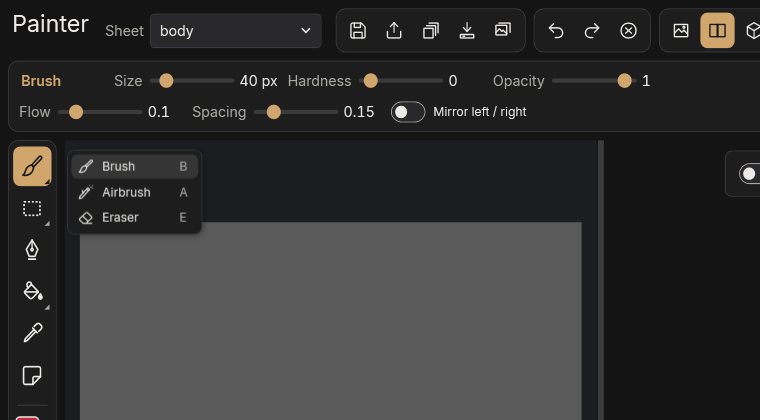
| Tool | Key | |
|---|---|---|
| Brush | B | Size, hardness, opacity, flow, spacing, smoothing |
| Airbrush | A | Keeps building while held still |
| Eraser | E | Removes paint from the layer |
| Rectangle, Ellipse, Polygon | M, O, L | Selections: new, add, subtract, feather |
| Demarcation line | K | Selects below or above a line drawn along the vehicle |
| Band | U | Selects a band of real width round a part |
| Magic wand | W | Selects the connected area of a colour |
| Panel | N | Selects a whole UV panel, clicked on the sheet or the model |
| Object select | Q | Selects the marking or shape under a click on the sheet |
| Path | P | Editable outlines, which can snap to UV lines |
| Bucket | G | Fills connected colour, or a pattern |
| Replace colour | R | Swaps a colour everywhere, keeping its shading |
| Eyedropper | I | Picks a colour |
| Decals | D | Places, moves, resizes and rotates decals in the 3D view |
The options bar shows only the chosen tool's settings, where they stay in view: for the brush its size, hardness, opacity (the most a single stroke covers), flow, spacing and smoothing, and Mirror left / right, which paints the matching spot on the vehicle's other side wherever it lies on the texture, on the flat sheet as in 3D. [ and ] change the brush size.
Straight lines: with the Brush, Airbrush or Eraser, hold Shift and click to draw a straight line from where your last stroke ended to the click; click on with Shift held and each click adds another straight piece. It is one Undo step, and after Undo the next Shift + click starts from the same place again. On the flat sheet the line joins the last stroke on that sheet. With Paint in 3D it is straight on the screen and lies over the surface as a dragged stroke does, and it joins the last stroke painted in the view as it stands: turn, zoom or pan the view and the next stroke starts afresh. Shift + drag still pans the 3D view.
Smoothing steadies a shaky hand, for pinstripes and long curves. The brush trails the pointer on a string, longer the higher the slider is, and paints where the brush circle is, a little behind the pointer; the stroke ends at the circle. At 0, where it starts, the brush follows the pointer exactly. It works on the flat sheet and with Paint in 3D, and is measured on the screen, so zoom in for finer work.
Colours
The foreground and background colours sit at the foot of the rail: click the front swatch to choose a colour, the back one, or X, to swap them. The Colour panel on the right holds the rest. Type a hex value such as #4A5155 in its colour box and press Enter, or use Choose colour…, Swap, Black and White, the R, G and B boxes (Tab goes from one to the next) or the sliders under them, or take a colour from the sheet with the Eyedropper. Recent colours remembers the last ones you used, also after you leave Edit. Name a colour in the box beside Save colour to keep it in your palette; a colour already saved is not saved twice, and a right-click on a saved colour removes it again (Undo brings it back). The Saved palette list chooses between this project's colours and palettes you imported: Import palette… brings in a GIMP, Photoshop or CSV palette, such as an RLM or FS 595 chart, and Remove this palette takes the one shown out of PRISM, leaving your file alone. Type a colour's code, like RLM 74, in the colour box to use it.
Selections
Rectangle, Ellipse and Polygon draw selections: while one is active, painting and fills stay inside it. Choose New selection, Add to selection or Subtract from selection on the options bar. Hold Shift while dragging to make a rectangle a square or an ellipse a circle, on the sheet or the vehicle. For Polygon, click each corner, then click the first corner again, double-click or press Enter to make the selection; Delete or Backspace takes back the last corner while you draw it. Esc cancels a selection or shape you are still drawing.
With a selection tool or the Path tool chosen, the options bar starts with the selection's Feather and its actions, always in the same place: Feather gives the selection a soft edge, so paint fades out across it; Fill selection fills it with the colour or a pattern (with no selection, the whole sheet); Remove marking (see Removing markings); Invert selection (Ctrl+Shift+I) swaps inside and outside; Transform (see below); and Clear selection (Ctrl+D) drops the selection. With other tools they stay off the bar, but the menus and keys still reach them: Select → All (Ctrl+A) selects the whole sheet, Select → Deselect and Invert match the bar's buttons, and Edit holds Fill selection, Transform and Remove marking. Unlike Clear selection, Edit → Clear (Delete) erases the selected layer's paint inside the selection, in one Undo step, fading where a feathered selection fades; it does nothing without a selection, and refuses a hidden or locked layer. While a decal is selected, Delete removes the decal instead.
The Magic wand selects the area of similar colour around the click, such as a letter of a marking, matched within the Tolerance; with Sample the visible colour off it looks at the selected layer only. Panel selects a whole panel of the sheet, its exact UV shape, from a click on the flat sheet or on the 3D model. Object select selects a whole marking, stencil or painted shape from one click on the flat sheet, following soft and weathered edges; the first time, PRISM asks to download its 126 MB AI model. A marking that crosses a panel seam may stop at the seam: Shift-click the rest. With any of these, Shift-click on the sheet adds to the selection and Alt-click takes away from it.
Transform (Ctrl+T) moves, turns and resizes the selection together with the selected layer's paint inside it: drag inside the box to move it, a handle to resize it (Shift keeps its shape) and outside it to turn it (Shift in 15° steps); the pointer shows which a drag will do. Transform works on the flat sheet, so a move stops at the sheet's edge, even dragged over the 3D view; to put artwork on the vehicle, add it as a decal. Alt+drag copies the paint instead of moving it, and Ctrl+drag moves only the outline. Only the selected layer's paint moves: when that layer has no paint inside the selection, the status bar says so and only the outline moves, so select the layer that holds the paint. Enter applies it in one Undo step; Esc leaves everything as it was.
Edit → Flip horizontal and Flip vertical mirror the selected paint layer's paint inside the selection about its middle, as it lies on the sheet. On their own they apply at once, as one Undo step; with Transform open the flip joins it, to apply with Enter. The game draws some panels mirrored on the sheet, so lettering painted there may need a flip.
Ctrl+C (Edit → Copy) copies the selected paint layer inside the selection, whichever tool made it, and Ctrl+V (Edit → Paste) pastes it on a new layer above, at the place it was copied from, with Transform already started: drag it where it should go and press Enter, or Esc to leave it where it was. To copy part of the livery itself, click the Livery row first: Ctrl+C then copies the livery inside the selection, and Ctrl+V lays it on a new layer straight above the livery. A copy pastes only onto a sheet of the same size. To clean a stock marking off the livery, Remove marking (see Removing markings) also redraws the panel lines.
With the Brush, Airbrush, Bucket or Replace colour on the flat sheet, hold Alt and click to pick up a colour without changing tool.
Paths
Path draws smooth outlines point by point: click for a corner, drag for a curve, and click the line between two points to insert one there. Alt+drag a point to pull out its handles, and double-click one to switch it between a corner and a curve. With Snap path point to nearest UV line on, hold Shift while placing or moving a point to pull it onto the sheet's panel and island edges, within the Snap reach. Save path keeps a path in the Saved list, New path starts another and Delete path removes one. Then Stroke path traces it with the brush settings on the bar (Stroke all paths traces every saved path on the sheet at once, in one Undo step), for clean lines and stripes, or Path → selection (also Select → Path to selection) turns it into a selection to fill or paint inside. Select a point and press Delete to remove it.
For painting a panel, draw its outline with Path first, then Path → selection and fill it or paint inside it: panel lines on the sheet are not always closed.
Fills and patterns
Bucket fills an area of similar colour; Tolerance sets how similar. Fill with, for the Bucket and for Fill selection, chooses a flat colour or a pattern: Checkerboard, Stripes, Diagonal stripes, Chevrons, Dots or Grid, in the foreground colour over the background, with a Pattern size, an Angle, and Across and Down offsets to line it up with a panel or marking. Leave gaps transparent paints only the pattern's marks and keeps what is underneath.
Camouflage patterns are in the same list: Splinter, Wave, Mottle, Squiggle, Smoke rings, Blotches and Digital (pixel camouflage), and three animal skins: Giraffe, Cheetah and Leopard. They are laid out on the vehicle itself rather than on the flat sheet, so the patches carry across the sheet's seams and line up from fuselage to fin. Patch size is in metres, so the same size suits a fighter and a bomber, and Variation gives another layout of the same design. For a three-colour scheme, fill the base colour, then each further colour with Leave gaps transparent on and a new Variation. Camouflage uses the maps Edit prepares when it opens; a fill made before they are ready waits for them. A fill covers the sheet shown, so fill each sheet a vehicle uses.
Replace colour swaps one colour for another everywhere on the sheet, or only inside a selection. Keep shading keeps the panel lines, weathering and shading beneath; off, it replaces the colour flat.
Layers
The Layers tab of the dock on the right works like Photoshop's or Affinity's: an eye to show or hide each layer (Alt+click shows that layer alone, and again brings the others back), Blend (Normal or Multiply), Opacity, the locks (Lock transparency paints only where the layer already has paint; Lock layer stops painting on it) and a mask (black hides, white shows). Each row shows a small picture of the layer's paint on the open sheet, and of its mask once it has one. With Paint layer mask on (the second button under Mask), the brush paints the selected layer's mask instead of its colour, the swatches turn black and white, and the options bar says Painting the layer's mask, not its colour beside the tool; click that to paint colour again. Enable mask switches a mask off and on, to compare without deleting it. The buttons under the list add a New layer above the selected one, a New finish layer, Import image and Add weathering, and Duplicate layer, Merge down, Move up, Move down and Delete layer; the Layer menu has them all by name.
Import image as layer lays a DDS, PNG or TIFF over the sheet as a new paint layer, stretched to the sheet's size (a DDS's alpha may be the game's gloss, so when a DDS has transparent areas PRISM asks which it is), and so does a picture dropped onto the window in Edit. A PNG or TIFF of another shape than the sheet, or under half its width, such as an emblem, comes in at its own size in the middle of the sheet with Transform started, so you can drag it into place and press Enter; to put artwork on the vehicle itself, a decal is usually easier. Choose or drop several files and each becomes its own layer, in name order with the last name on top; double-click a name to rename it; drag a layer to reorder it.
The vehicle's own livery lies under every layer, as the Livery row at the foot of the list. It is locked: you cannot paint on it, move it or delete it, but a click selects it so Ctrl+C copies from it. To paint on the livery itself, select its row and click Duplicate layer: the whole livery, every sheet of it, is copied onto one new paint layer straight above it, which you can paint on and erase like any other. Its eye (or View → Hide livery) hides the livery on every sheet while you edit, so you see your layers alone over plain grey, which helps when an imported image should cover the whole livery. The status bar reminds you while it is hidden. Hiding it is not an edit and is not saved: the livery shows again when you leave Edit, and Export skin, the Layered PSD, the project's picture and every render always include it.
Merge down puts the selected layer into the paint layer below it, as one layer at full opacity with no mask, looking just as the two did. Both layers must be shown, unlocked and on Normal blend; finish layers do not merge. A Repair or weathering layer can be merged down too, giving its colour; its finish (gloss and metal) is not kept, as a paint layer holds colour only. Nothing merges into the livery: duplicate it first and merge into the copy.
Every layer is listed on every sheet, though its paint can lie on one sheet alone, as an imported image's does. A layer with no paint on the sheet shown has a dimmed name, and pointing at it names the sheet its paint is on.
Keep separate things on separate layers (a base colour, stripes, numbers, dirt), so each can be changed, hidden or toned down later. A Multiply layer painted in greys darkens what lies beneath, which suits panel shading and grime.
Ctrl + Z and Ctrl + Y (Edit → Undo and Redo) undo and redo every step, decal edits and selections included, in the order you made them. Undoing a paint step also brings back the selection you had then. A selection is not an edit: it never makes the project unsaved. Edit → Cancel operation (Esc) stops a fill or selection still being worked out.
Decals
Decals are placed in Edit too. The Decals tool (D) at the foot of the tool rail places, moves, resizes and rotates them in the 3D view, and its flyout adds images, text, artwork, sets and markings, as the Decal menu does. They are listed on the Decals tab of the dock on the right, with the selected decal's settings below; choosing the Decals tool opens that tab. Decals and watermarks covers them in full.
Finish layers
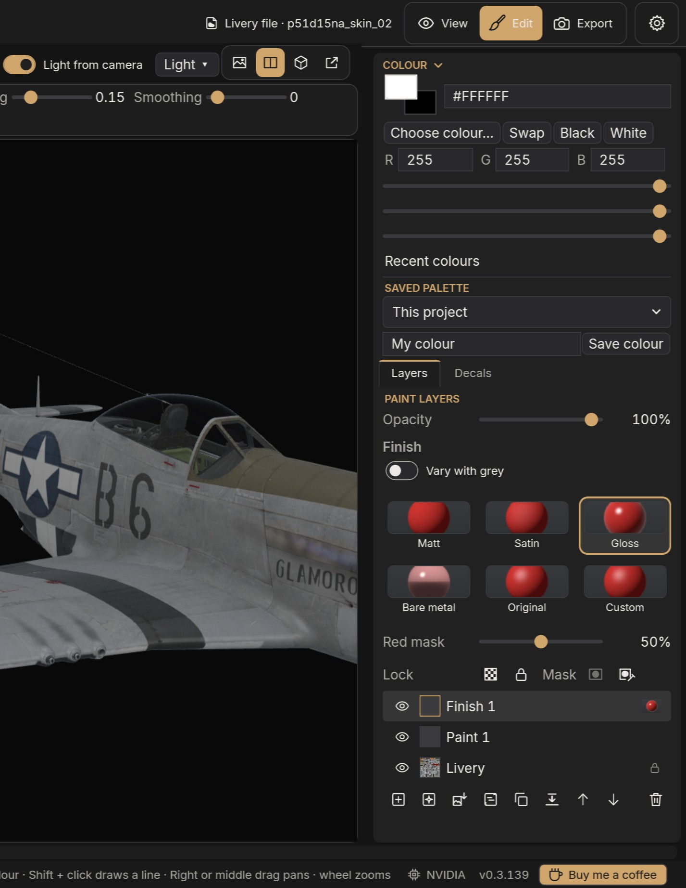
New finish layer adds a layer that paints finish instead of colour: how matt, glossy or metallic the skin is. Paint it with the usual tools; the colour you choose is ignored. Pick its finish in the Finish tiles: Matt, Satin, Gloss, Bare metal, Original (back to the skin's own), or Custom for an exact gloss level. Changing the finish later re-finishes everything the layer covers, with no repainting. While a finish layer is selected, the area it covers shows red on the flat view, so you can see where you have painted; the Red mask slider under the finish tiles sets how strong the red is, and it is never part of the skin. Show finish, on the sheet's bar, shows the finish in grey instead of the colour, white where it is glossy. Exported skins carry the finish in the DDS alpha, as the game expects.
Vary with grey lets one finish layer hold a range. Pick a Black and a White finish, then paint with the Value slider on the options bar: black gives the Black finish, white the White, grey something between, which suits streaks and worn paint. A layer with a Bare metal end switches from paint to metal at 50% grey instead of fading, because the game's in-between values look like wet paint.
With a finish layer selected, Replace colour becomes Finish by colour: click a colour to give every part of the skin in that colour the layer's finish.
Weathering
Add weathering (beside New finish layer) adds wear worked out from the vehicle's own shape. Choose a paint type and a wear level, and three layers appear above the selected layer:
- Grime darkens recesses, panel lines and fasteners, and leaves the paint matt there.
- Exhaust streaks run back from each exhaust stub along the airflow, on its own side of the aircraft.
- Edge wear chips paint along panel edges, rivets and the real edges of the airframe, through primer to bare metal, and less where the surface is sheltered.
The paint types set all three at once: Primed metal (most WWII fighters), Unprimed metal (larger chips straight to metal), Wood and fabric (little chipping, more grime) and Natural metal (no chips: duller, rougher panels). Factory fresh, In service and Heavily worn scale them all; heavy wear chips more along the edges but leaves flat panels painted.
Each weathering layer keeps its settings. Select one to change them on the right: amount, sharpness, chip size, streak length and so on, and its colours. Moving a slider updates the 3D view; letting go keeps the change as one undo step. New variation gives the same settings with different chips and patches, and Regenerate, when it is offered, rebuilds the layer from the vehicle's current shape. Weathering is generated, so the brush does not paint it: paint its mask to erase wear where it does not belong or bring it back, and the mask stays put when you change a setting. The options bar says what the Brush and Eraser do while such a layer is selected. The colour and finish both reach the skin: grime and soot are matt, and chips are a little glossier than the paint around them, as on the stock skins.
Streaks start from the exhaust stubs the model provides. Where one is missing, select the Exhaust layer, choose Add exhaust and click each stub on the vehicle; Clear added exhausts removes them again. Panels that both sides of the aircraft share in the skin get streaks on both sides, and the layer says so.
Weathering, like camouflage, the Band and the Demarcation line, uses maps of the vehicle (where its edges, recesses and panels are) that Edit prepares as it opens. The first time for a vehicle this takes a few seconds, and the status bar shows it; after that they are kept. Weathering is for aircraft for now; it is not offered for ground vehicles.
Removing markings
To start a new skin from a stock or downloaded livery, you can take its baked-in markings and lettering off. Select the marking with any selection tool (the Magic wand picks up a letter or number well) and leave a little clean paint round it, then choose Remove marking on the options bar or in the Edit menu, or press Shift+Delete.
PRISM fills the selection from the paint round it and draws the panel seams and rivets back from the sheet's normal map, so they line up with the real panels. The finish is repaired too, so no glossy shadow of the lettering stays on the model. The result goes on a Repair layer for that sheet, above the selected layer; the sheet itself is never changed. Removing more markings on the same sheet adds to the same layer. A shape drawn on the vehicle across a joint between two sheets removes the marking on both, each on its own sheet's Repair layer, and one Undo takes both back. Paint on a layer above the Repair layer, and decals, which are drawn over all paint, still show over a removed marking; the status bar names them, so you can hide or change them.
Select the Repair layer to adjust it on the right. Texture runs from plain paint with only the seams and rivets (0 %) to the grime and mottling of the paint round it (100 %), and stronger still up to 300 %; Seams sets how strongly the seams and rivets are drawn, from none (0 %) through the strength of the paint round them (100 %) to three times that. Like weathering, the brush paints only its mask: the Eraser brings part of the marking back and the Brush the repair. The options bar says so beside the tool while the Repair layer is selected; to paint colour over the repair, select a paint layer above it.
Removing markings works best over one plain colour. Over a camouflage edge the fill is a blend of the colours round it, and the layer says so. A selection with no clean paint round it, such as a whole panel, is refused. Sheets without a normal map, such as some propellers, are filled without seams.
Saving
- File → Save (Ctrl+S) keeps everything editable as a project: layers, masks, paths and palettes. Save as… (Ctrl+Shift+S) saves under a new name or in another folder, and Save version… keeps a copy of this moment inside the project, which Versions… brings back (see Projects and sessions). Keep the
.prismfile and its.prism.assetsfolder together. - File → Export skin… writes the painted DDS sheets at full resolution for the game, wherever you choose, backing up any file it replaces. It is greyed, with the reason, until there is paint or a decal to export.
- File → Export to game writes them straight into the game's Skins folder for this vehicle, under the livery's file name, keeping any file it replaces in the project's
skin-backupsfolder. File → Layered PSD… saves the livery, each paint layer and each decal as Photoshop layers. File → References… shows the project's reference photos, added from its card on the projects page (see Projects and sessions).
Quick PNG and Blender exports include your paint. If PRISM closes unexpectedly, it offers to recover your work when it next starts.
Exporting
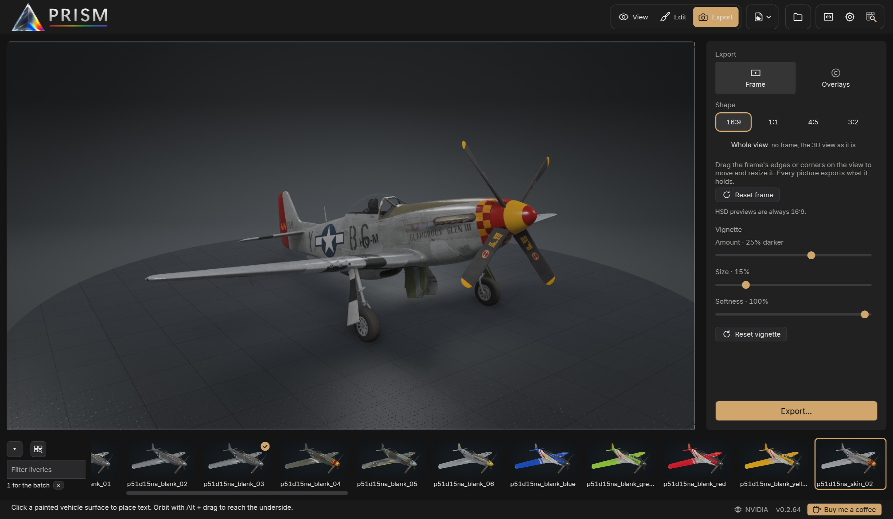
Pictures, renders and files are made in Export (the View · Edit · Export switch at the right of the menu bar, or Ctrl+3). The library steps aside so the view gets the room, and the icons at the right of the view open two panels, Frame and Overlays (also in the Window menu). The panel opens beside the view each time you come to Export; point at the other icon to look at its panel over the view, click it to keep it there, and click the open panel's icon to close it. Export… at the foot of the panel opens the Outputs window, as does File → Export pictures… (Ctrl+E while you are in Export; from another workspace the menu item switches to Export first). The background, lighting and exposure are set in View (Ctrl+1), and Ctrl+3 brings you back. In Export a left-drag on the view still orbits, so you compose the shot here, while the frame and overlays move only by their handles.
Every export uses the current livery, pose, lighting, background and overlays, and takes exactly what the frame shows. PRISM asks where to save each picture, and Open images after export (Settings) opens it in your usual image viewer when it is done. When an export is saved, the status bar says so with Open folder beside it.
The frame
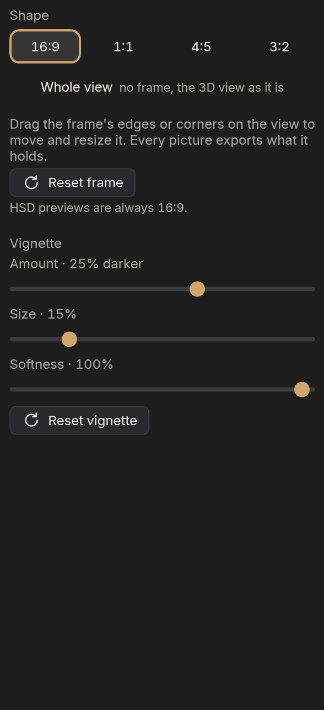
The Frame panel sets the picture's shape: 16:9 (also the HSD picture's 1280 × 720), 1:1, 4:5 or 3:2. The frame is drawn on the view, with the area outside it dimmed; drag its edges or corners to move and resize it, and Reset frame restores the largest centred 16:9 frame. Whole view turns the frame off, so every picture takes the 3D view at its own shape. Projects remember the frame, and the HSD picture always uses 16:9.
Vignette, under the frame shapes, darkens or lightens the background towards the frame's corners, never the vehicle. Amount runs from lighter through Off to darker and starts at 25% darker, the look PRISM has always had; Size keeps more of the centre clear; Softness sets how gradual the fade is. It shows inside the frame while you compose and in every picture, Cycles renders and turntables included, but not in View or Edit, and not on transparent or chroma-key pictures. Reset vignette returns to 25% darker, and projects remember it.
The Overlays panel holds the vehicle name, the watermark and your artwork (see Decals and watermarks). The lens and Fit stay on the view bar (see The PRISM window).
Outputs
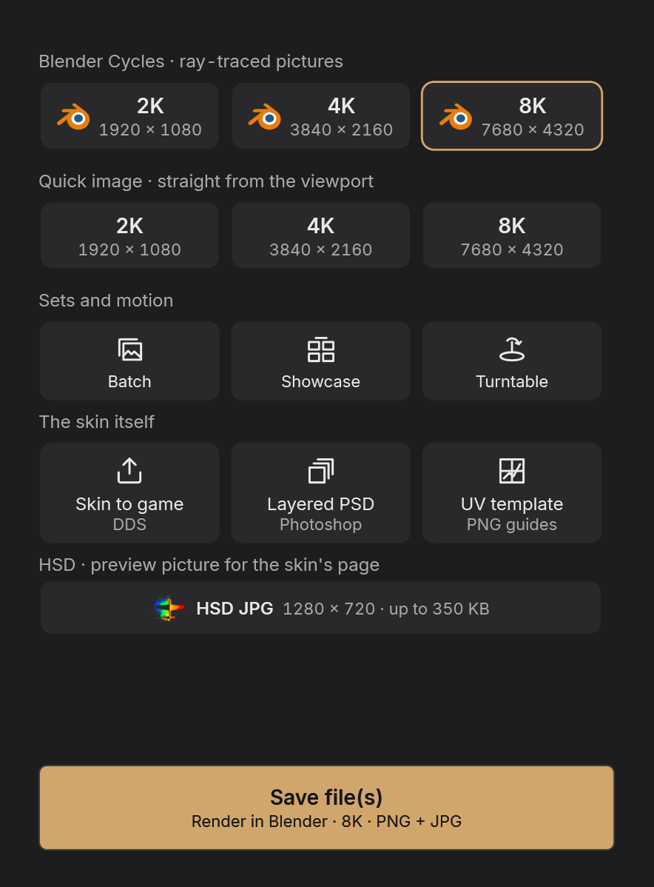
The Outputs window has a tile for every kind of export, in groups: Blender Cycles, Quick image, Sets and motion, The skin itself, and HSD. It has a fixed size and cannot be resized. The picture tiles (Blender Cycles and Quick image, each at 2K, 4K and 8K, and HSD JPG) only choose, and the chosen tile is outlined: the yellow Save file(s) button at the bottom says what it will make, such as Export Quick PNG + JPG · 4K or Render in Blender · 8K · PNG + JPG, closes the window and makes it (Enter does the same, Esc closes the window without saving). PRISM remembers the last choice. The other tiles act at once: Batch, Showcase and Turntable close the window and open their own, and Skin to game, Layered PSD and UV template close it and ask where to save, all described below. A tile with nothing to do is greyed out, and its tooltip says why: Skin to game until you have painted or placed a decal, the others until a vehicle is loaded.
With guests in a group picture (see Scene), Quick PNG, HSD JPG, Blender Cycles, showcases and turntables show the whole group. Skin to game and Layered PSD are the main vehicle's alone, and Batch liveries steps through the main vehicle's liveries while the guests keep theirs.
Quick image
Quick PNG renders on your graphics card in seconds, straight from the viewport:
- 2K (1920 × 1080) and 4K (3840 × 2160) PNG plus a 90% quality JPG, each smoothed by rendering larger and averaging down.
- 8K (7680 × 4320) PNG, plus a 90% quality JPG.
The sizes given are for the 16:9 frame; each tile shows the size for the frame you have chosen.
With Transparent as the background, Quick PNGs keep a real transparent background, the vehicle's shadow too if you choose Include ground shadow. The matching JPG uses a neutral grey background because JPEG cannot retain transparency.
HSD JPG
HSD JPG makes a 1280 × 720 picture under 350 KB, the size HSD Online asks for, of exactly what the frame shows, with its overlays. It needs the 16:9 frame (choosing HSD JPG sets it); with another shape or Whole view PRISM says so and saves nothing. With a project open the file takes its livery file name.
Blender Cycles
Blender renders the scene with Cycles, a ray tracer, for the most realistic light, reflections, glass and shadows. Choose 2K, 4K or 8K; each saves a PNG plus a matching 90% quality JPG with the same name and dimensions. Transparent PNGs retain their alpha; their JPG companions use a neutral grey background. A progress bar follows the render, and you can keep working meanwhile.
The first time, PRISM offers to download the official portable Blender, or to find one you already have. Cycles renders on the graphics card: NVIDIA (OptiX or CUDA), AMD Radeon (HIP) or Intel Arc (oneAPI), and on the processor otherwise, more slowly. The graphics card's name in the status bar has a tooltip that names the card the last Cycles render used.
Quick PNG or Cycles? Quick PNG for progress pictures, forum posts and anything you want now; Cycles for the finished picture, especially with glass, polished metal, the sky or the game hangars, where its light is noticeably richer. The scene is the same either way, so set it up with Quick PNGs and render the final picture in Cycles.
Batch liveries
Batch liveries renders a list of liveries for the current vehicle through Blender, each with the same camera, vehicle setup, lighting and overlays, into a folder of its own:
- Tick the liveries to render (Select all, Clear selection), or Add files… for skins from elsewhere. Liveries you chose on the filmstrip with Ctrl+click arrive ticked, and only those.
- Choose the Blender resolution and the Output folder; each run makes its own subfolder.
- Apply current vehicle decals to each livery, if you like, composes a frozen copy of your decals onto every livery; your editable decals stay as they are.
- Render selected. Each livery is saved as a PNG plus a matching JPG; a livery that fails is reported and the rest carry on, and cancelling keeps the pictures already finished.
Showcase
Showcase presets and packs makes a coordinated set of pictures of the current vehicle and livery:
- Presentations: styles such as Clean studio, Museum or Squadron poster, each with its background, lighting, framing and watermark styles, or your own. Preview shows a quick picture of the presentation before you export.
- Views to include: the views to export, from the built-in angles and your own saved views. Save current view keeps the camera and frame in the project (up to 24); Save presentation keeps a presentation for use with other vehicles.
- Export pack: Quick PNG at 2K or 4K, or Blender Cycles at 2K, 4K or 8K, into a folder, with a JPG companion for each picture and an optional contact sheet of every picture.
Turntable
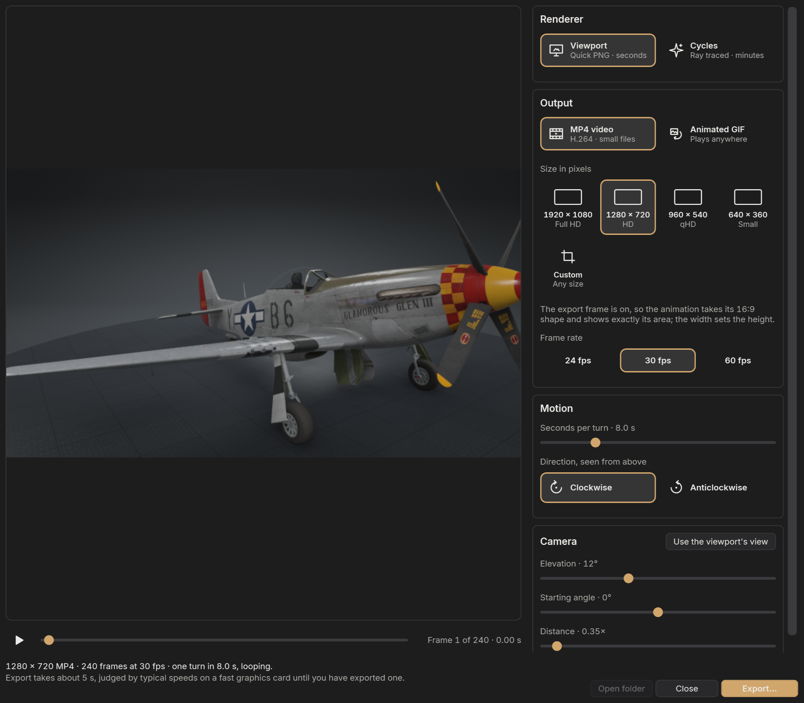
Turntable GIF or MP4 exports the vehicle turning once on its platform, looping without a jump.
- Renderer: the Viewport, at Quick PNG quality, in seconds; or Cycles, ray traced, which takes minutes (about a second a frame at HD on a fast graphics card), with its samples per frame.
- Output: MP4 video (H.264, small files, best for sharing) or an Animated GIF (plays anywhere, but large files), at Full HD, HD, qHD, square, vertical or a custom size, and 24, 30 or 60 frames a second.
- Motion: seconds per turn, and the direction, clockwise or anticlockwise seen from above.
- Camera: elevation, starting angle and distance; Use the viewport's view takes them from the main viewport.
The window plays a preview of the turn (Space plays and pauses, and the bar under it scrubs to any moment) and estimates how long the export will take, learning from your own exports. The vehicle keeps its size from the viewport, so a wider output shows more of the scene either side. Spinning propellers, flames and other effects are animated frame by frame.
The skin itself
Skin to game saves the skin with its paint and decals as a DDS for the game, the same as File → Export skin… in Edit. One edited sheet asks for a file name; several ask for a folder and save one file per sheet. A file already there is backed up first. To write the livery straight into the game's Skins folder instead, use File → Export to game in Edit, or Export to Skins folder on a project's card (see Projects and sessions).
UV template asks for a folder and saves three PNGs for each livery sheet, at the sheet's own size, for painting in any program: the UV outlines on a transparent background, a labelled colour grid, and the sides (the aircraft's right side red, its left blue, both purple).
In Edit, File → Export skin…, Export to game and Layered PSD… do the same as their tiles; outside Edit they are greyed out.
Layered PSD
Layered PSD (in Outputs, and File → Layered PSD… in Edit) saves each edited texture sheet as a Photoshop file, so your paint and decals can go straight onto your own template. With nothing painted or placed yet, it saves the livery itself, with its gloss, as a ready-made template. One sheet asks for a file name; several ask for a folder and save one PSD per sheet. A file already there is backed up first, and the next Layered PSD starts in the folder the last one went to.
Each PSD holds, from the bottom:
- Livery: the skin as it was loaded, before any paint or decals.
- Paint: each Painter layer under its own name, with its opacity, its blend mode (Normal or Multiply) and its mask as a Photoshop layer mask. A layer hidden in PRISM arrives hidden. Weathering layers bring their colour; finish layers have none, so they show only in the gloss.
- Decals: each decal under its own name and blend mode, with its outline, blur and weathering already applied. Text decals arrive as pixels.
- UV guides, on top and hidden: Sides, Colour grid and UV outline, the UV template's pictures, to switch on in Photoshop while you paint. They never reach the flattened image or the gloss.
Programs that ignore layers show the flattened image, which is the skin Export skin makes, before the game's compression. The gloss is the file's alpha channel, Gloss, as in the game's DDS.
PRISM mixes colours in linear light. For Photoshop to show the layers exactly as PRISM does, turn on Edit › Color Settings › Blend RGB Colors Using Gamma 1.00; without it, soft edges, partial opacity and Multiply can look very slightly different.
Projects and sessions
Sessions
PRISM reopens where you left off: the vehicle, livery, camera and scene you were viewing when it closed, including changes you never saved. This session is private to PRISM and never overwrites your project files. Paint layers and decals live only in a project, so if you closed PRISM on a project that has them, still on its vehicle, PRISM reopens that project as you last saved it, where you left the view.
While you paint, PRISM keeps a recovery copy of the painting. If PRISM closes before that painting is saved, after a crash for instance, the next start asks Recover the last unsaved Painter project? Yes opens the painting again, still to be saved; No keeps the copy aside under a new name, and the notice says where, so nothing is deleted.
Starting a project
File → New project… starts a project from the vehicle on screen. Give it a name, and choose what to Start from: The vehicle's original livery, The livery on the vehicle now or A DDS file… (Browse… chooses it). Create saves the project at once in the project folder under that name, and opens it in Edit with no paint layers or decals, ready to paint. A name that is taken, or that cannot be a file's name, is explained in the window before you can create it. If the window holds painting or decals that are not saved, PRISM asks about them first.
File → Open project… (Ctrl+O) opens a .prism file from anywhere, and File → Open recent lists the five projects in the project folder saved most recently, opening the one you choose in the workspace on screen.
Your projects
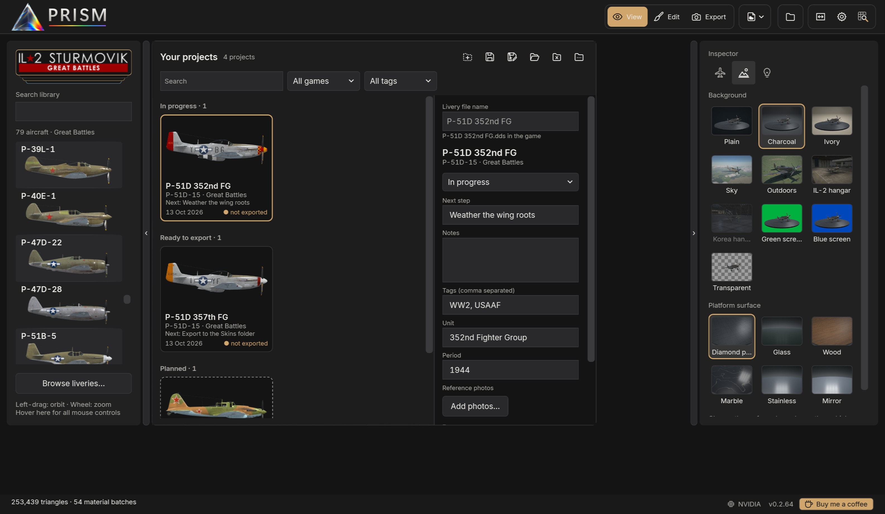
File → Projects page, or the Projects icon on the left of the view in View and Export, opens a page of every project in your project folder and the folders inside it, grouped as In progress, Ready to export, Planned and Released (Released folds away; click its heading to show it). When PRISM starts without a session or project to reopen and the project folder holds projects, it opens on this page. Each card shows the livery side on, drawn like the vehicle pictures in the library: as it was when you last saved, or, for the project you have open, as it is now, a moment after each change. It also shows the vehicle, your next step, when you last saved it, and a marker when it has never been exported to the game or has changed since. A planned project has a dashed outline. Search by name, vehicle, notes or tag, or show the projects with one tag. Double-click a card to open it in Edit, ready to paint; Open project (or Enter) opens it in View, or in Export if it was saved there.
The icons at the top of the details panel are Plan project, Save project, Save project as, Load project, Close project and, last, Project folder.
Click a card to see and edit its details on the right. First is the livery file name: the name of the livery's files in the game, which Export skin, Export to game and the HSD picture all use, and which other players see when you share it. Left empty, the project's name is used; characters a file name cannot hold, and the # the game reads as a sheet marker, are left out. Below it are its stage, next step, notes, tags, unit and period, reference photos and exports. Changes are written into that project's file straight away, without opening it or touching anything else in it. Either way it opens with the camera and lens as you left it, even if you moved them without saving. Escape, or File → Projects page again, leaves the page for the workspace you were in.
Plan project starts a card for a vehicle you have not painted yet, with room for notes and reference photos (PNG, JPEG, WebP or BMP). Opening it loads the vehicle ready to begin, and it moves to In progress the first time you save it with a livery or paint.
Reference photos added to a card (Add photos…) are copied into the project's .prism.assets folder, so they travel with it. In Edit, File → References… shows them in a window you can keep beside the viewport.
Export to Skins folder, on a card's right-click menu or under its details, and File → Export to game in Edit, write the livery straight into the game's Skins folder for that vehicle (set the Great Battles folder in Settings), keeping the files they replace in the project's skin-backups folder (the newest three of each) rather than in the game. PRISM asks before writing and tells you afterwards which files it wrote and where, or why it could not. From a card, PRISM opens the project from its file (unless it is already open with its own vehicle), exports it with the same files Export skin makes, and comes back to the page. Export to game writes the decal and Painter sheets PRISM made; a project with only a livery file applied has nothing of its own to export. Every export, including Quick PNG and Blender pictures, is listed on the card.
Rename, duplicate, show in folder and delete are on a card's right-click menu. A duplicate, like a project saved under a new name with Save as…, is a new livery: it starts with no livery file name and no exports, so exporting it never replaces the original's files in the game. Delete moves the project and its files to the Recycle Bin; the open project cannot be deleted, and one with Painter layers or decals must be closed before it is renamed.
Saving and loading
File → Save (Ctrl+S) writes the open project; the first time, and with File → Save as… (Ctrl+Shift+S), PRISM asks for a name and folder. Opening a project brings back the vehicle and its liveries, camera, lens and pose, the vehicle's options, the background and lights, exposure and contrast, the frame and overlays, decals and Painter layers. File → Open project… opens it in the workspace it was saved in; Open recent and a project's card on the filmstrip open it in the workspace on screen.
File → Save version… saves the project and keeps it as it is now as a version, with a note if you give one, such as "before the stripes". File → Versions… lists the open project's versions, newest first, with their pictures: Go back to this version (or a double-click) brings back its paint layers, decals and scene, and first keeps what you have now as a version of its own, so nothing is lost. The livery file name, the export history and the camera stay as they are. On an NTFS drive, as Windows' own drive is, versions share the project's paint files, so each takes little room; on a drive formatted exFAT or FAT32, as many USB drives are, each version holds its own copy. Paint a version holds stays on the disk after you remove it from the project, until that version is deleted. Delete moves a version to the Recycle Bin. A project saved under a new name, or a duplicate, starts without versions. Versions… needs a project saved to a file.
A project holds one livery and its painting. When a livery change drops the painting (choosing another livery in Edit, or putting one on in View or Export while a painting from Edit is held), PRISM leaves the project, so its file keeps the old livery, its painting and its decals as they were, the decals leave the window with it, and the next save asks for a name. In Edit it asks first (see Liveries); elsewhere it asks only when paint layers or decals have changes that are not saved.
A project refers to your skin files and artwork where they are; it does not copy game files or outside images, so keep those files available. Projects with Painter layers keep them in a .prism.assets folder beside the project file: move the two together. Project folder (the last icon on the projects page) sets which folder the page lists, where new projects are saved and where the file dialogs open.
Keyboard and mouse
Every shortcut in one place. Help → Keyboard shortcuts lists the menus' keys and the tools' keys in a window of its own, and each menu shows a command's key beside it. Hover a button in PRISM for its name.
Workspaces and liveries
| View, Edit, Export | Ctrl+1, Ctrl+2, Ctrl+3 |
| Open the Outputs window | Ctrl+E in Export, or File → Export pictures… from anywhere |
| Previous or next livery | Ctrl+← and Ctrl+→ on the filmstrip (not while typing in a box) |
| Choose liveries for a batch | Ctrl+click their cards |
| More on a livery | Right-click its card |
| Hide everything but the vehicle | Tab, again to bring it back (View and Export, not while typing in a box) |
| Close a panel over the view | Esc, or click the view |
The 3D view
| Orbit and tilt | Left-drag |
| Pan | Right-drag, middle-drag or Shift + drag |
| Zoom | Mouse wheel, towards the pointer |
| Fit the vehicle | Double-click, or Fit on the view bar |
| Turn and pitch the vehicle itself | Ctrl + left-drag |
| Roll the vehicle | Ctrl + wheel, 5° a notch |
| Reset the view | Ctrl + R: the default three-quarter view, fitted |
| Turn the view to a side | Click a face, edge or corner of the view cube |
| Orbit from the cube | Drag the view cube |
| Adjust the frame | In Export: drag the frame's edges or corners |
In View and Export, moving the camera or turning the vehicle temporarily uses a lighter, antialiased preview for smoother movement. Full picture quality returns as soon as you stop. Saved images always use their full export quality.
Projects
| Save project | Ctrl + S |
| Save project as | Ctrl + Shift + S |
| Open project | Ctrl + O |
| Open a project in Edit | Double-click its card |
| Leave the projects page | Esc, or File → Projects page again |
The Painter's tools
In Edit, the chosen tool's keys also sit at the right of the status bar.
| Brush, Airbrush, Eraser | B, A, E |
| Rectangle, Ellipse, Polygon selection | M, O, L |
| Demarcation line | K |
| Band | U |
| Magic wand, Panel, Object select | W, N, Q |
| Path | P |
| Bucket, Replace colour | G, R |
| Eyedropper | I |
| Decals tool | D |
A tool key pressed while the Painter is still busy is kept, and the tool is chosen as soon as the work ends.
The Painter
| Undo, redo | Ctrl + Z, Ctrl + Y |
| Cancel what you are doing | Esc |
| Swap foreground and background colours | X |
| Smaller or larger brush | [ and ] |
| Pick a colour without leaving the tool | With Brush, Airbrush, Bucket or Replace colour: Alt + click on the sheet |
| Straight line from the last stroke's end | With Brush, Airbrush or Eraser: Shift + click |
| Paint in 3D on or off | 3 |
| UV overlay on or off | V |
| Select all, deselect, invert | Ctrl + A, Ctrl + D, Ctrl + Shift + I |
| Square or circle | Shift while dragging a Rectangle or Ellipse; in the 3D view these take Shift + drag, so pan with the right or middle button |
| Add to or take from a selection | Magic wand, Panel and Object select: Shift + click adds, Alt + click takes away |
| Transform the selected paint | Ctrl + T; Enter keeps it, Esc puts it back |
| Copy and paste paint | Ctrl + C copies the selected layer inside the selection; Ctrl + V pastes it on a new layer, ready to move |
| Clear the paint in the selection | Delete |
| Remove the marking in the selection | Shift + Delete |
| Insert a path point | Click the line between two points |
| Delete the selected path point | Delete or Backspace |
| Remove a polygon's last corner while drawing it | Delete or Backspace |
| Zoom the sheet | Mouse wheel, towards the pointer |
| Pan the sheet | Right-drag, middle-drag, or Space + drag |
| Paint / erase on the model | With Paint in 3D on and Brush / Eraser selected: left-drag |
| Select on the model | With Paint in 3D on and Rectangle / Ellipse selected: left-drag; with Polygon: click the corners, then the first corner, a double-click or Enter |
| Adjust a shape on the model | Drag one of its corner squares; Enter or Esc keeps it as it is |
| Draw a demarcation line | With Demarcation line selected, click points along the vehicle's side; Backspace removes the last, Enter or a double-click finishes, Esc drops it while drawing; drag a point to adjust it |
| Place a band | With Band selected, click the vehicle; drag its square to move it, Enter keeps it, Esc straight after the click takes it back |
| Orbit while painting in 3D | Alt + left-drag |
| Find a spot on the sheet | Turn Paint in 3D off, then click the vehicle |
| Show one layer alone | Alt + click its eye; again to bring the others back |
Delete acts on the first of these that applies: a selected decal, the selected path point, the last corner of a polygon being drawn, then the paint inside the selection. The 3D view beside the sheet takes the viewport's mouse controls.
Decals
In Edit, with the Decals tool (D) chosen:
| Place a decal | Click the vehicle after choosing an image, text or set |
| Select | Click a decal, or its layer; Ctrl + click or Shift + click for several |
| Move | Drag its centre |
| Resize | Drag its corner handle |
| Rotate | Drag its round handle |
| Snap to nearby decals | Hold Ctrl while placing or moving |
| Delete the selected decal | Delete |
| Let go of the decal | Esc, once nothing is being placed |
| Cut with the selection | Ctrl + X; Ctrl + Shift + X keeps only the selected part (also with a selection tool chosen) |
| Orbit | Alt + left-drag |
| Pan and zoom | Right-drag, middle-drag or Shift + drag; the wheel |
Sliders
Click a slider's track and the slider jumps there; keep the button down to drag it on from there. Once a slider is clicked, the arrow keys move it in small steps. Sliders that also take the mouse wheel, such as exposure, contrast and hangar brightness, take it only once clicked, so scrolling a panel never changes a value by accident.
Troubleshooting
Anonymous usage counts. PRISM shares its version, launch counts and approximate open time in the background. The server keeps only daily totals; no names, PC identifiers, project details, file paths or IP addresses are stored in usage statistics. Settings → Share anonymous usage counts switches this off immediately and remembers your choice. Network failures never interrupt your work. These counts are separate from manual problem reports.
Common questions
PRISM does not start. Install the Microsoft .NET 9 Desktop Runtime (x64) from Microsoft's website, then start PRISM again.
Start with Help → Check setup… (also in Settings): it shows whether the game folder, PRISM's data folder and Blender are in order, with a Fix… button for each problem, and Copy summary copies the findings for a problem report.
The library is empty. Choose Settings → IL-2 Great Battles folder… and select the game's folder. After a game update, restart PRISM so it reads the new files.
A skin looks white, flat or too shiny. Its finish data may be missing: try File → Skin options… → Surface finish → Automatic repair. Check the lighting too: a very bright preset or high vehicle exposure bleaches paint. Auto vehicle exposure is a good starting point.
Blender renders fail. Check that Blender is found (Help → Check setup… names the Blender PRISM uses, and Fix… downloads one or lets you choose yours), and that your graphics driver is current. A failed render keeps its log, so the problem can be found.
Blender renders are slow. Cycles renders on the graphics card when its driver supports it; otherwise it falls back to the processor, many times slower. Update the graphics driver, and hover the graphics card label in the status bar to see which card the last render used. Thick cloud layers, the game hangars and 8K all take longer.
Live DDS does not update. Live DDS watches a loose DDS file you loaded, not a packed game skin, so import the file you are editing first (File → Import skin…). Editable decals pause it, since they are baked onto the skin; save them into a project, or remove them, and it carries on.
A decal shows a warning. It reaches too far round a curve for its picture to lie flat. Make it smaller, or place it again from a view that faces that surface.
My skin does not appear in the game. Check the file is in the game's Skins folder for that vehicle (File → Export to game puts it there), and that the vehicle is flyable: AI-only aircraft, marked AI in the library, may not show custom skins in the game.
A menu command is greyed. Point at it: its tooltip says why. The Layer, Select and Decal menus, and the Painter's commands in Edit, work only in the Edit workspace.
MP4 turntables fail on Windows N editions. Install Microsoft's Media Feature Pack, or export a GIF.
The panel of game logos stays open after starting. It closes a few seconds after PRISM has settled, unless the pointer is over it.
PRISM ran into a problem. If something unexpected goes wrong, PRISM says so instead of closing: choose Keep working (save your project soon), Close PRISM, or Report a problem. Help → Report a problem… (also in Settings) does the same for anything that looks wrong without an error.
Reporting a problem. Report a problem opens a review window. Describe what happened, check the displayed technical details and recent log, then choose Submit report to send them to PRISM's private support inbox. No problem report is sent automatically. A receipt confirms delivery. Profile-folder names and credential assignments are removed; review the log for other personal information. No screenshots, projects or liveries are attached. Save ZIP / GitHub… keeps the alternative: a ZIP in the reports folder of PRISM's data folder, its folder opened, and an option to start a GitHub issue and attach it yourself.
Where PRISM keeps things
- Program:
%LOCALAPPDATA%\Programs\PRISMwhen installed; wherever you unpacked the zip otherwise. - Log:
PRISM.login thelogsfolder besidePRISM.exe, recording startup, projects, skins, exports and errors. Report a problem includes it for you. - Settings, session and caches: the
Datafolder besidePRISM.exe, unless you moved it with Settings → PRISM data folder… (before v0.3.45,%LOCALAPPDATA%\PRISM: an installed PRISM moves it once, a copy run from a zip keeps using the old folder). Deleting the caches is safe: PRISM rebuilds them. - Projects: the
Projectsfolder besidePRISM.exe, until you save them somewhere else. - The artwork library: the
artworkfolder in PRISM's data folder.
About PRISM
Help → About PRISM shows the version you are running. PRISM reads game data from your own installation; no game files, models or textures are included with it. It is an independent project, not made or endorsed by the makers of IL-2. The licences of the components it uses are in the docs\licenses folder beside PRISM.exe.